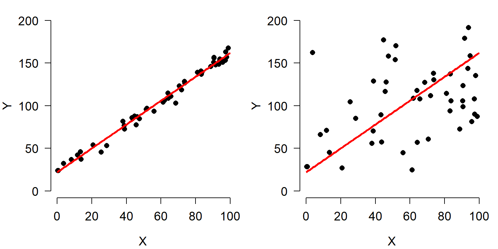
9 Probability distributions for biologists
9.1 Introduction
All data contain some element of randomness. Understanding the nature and consequences of that randomness is what motivates much of modern statistics. Probability distributions are the mathematical constructs that describe randomness in data. This module describes some probability distributions commonly encountered in biology (and a few that aren’t common). The emphasis here is on practical understanding of what the distributions imply about data–not on the theoretical underpinnings or mathematical details. If you want or need a rigorous introduction to probability theory, this is probably not the right place.
9.1.1 Residuals: the random variation left over
Consider the figures below:
Both scatterplots show a linear relationship between X and Y. But what is different about the plot on the right? Variation. Both plots show the same relationship (\(Y=22+1.4X\)), but they differ in that the variation about the expected value (the red line) is much greater in the right plot than the left plot. Consequently, X appears to explain much more variation in Y in the left plot than in the right plot. The next figure shows that the residual variation, or difference between the expected and observed values, is much greater in the right panel. Each of these differences between the observed value of Y (\(Y_i\)) and the expected value of Y (\(E(Y_i)\)), or \(Y_i-E(Y_i)\), is called a residual.
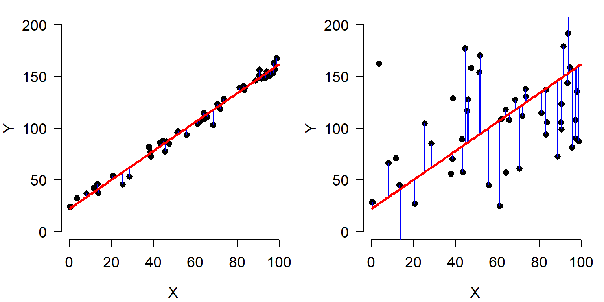
Residuals are an important part of statistical analysis for two reasons. First, most statistical models make assumptions about the distribution of residuals. Second, the total magnitude of the residuals (usually expressed as sum of squared residuals) is useful for calculating many measures of how well a model fits the data. The residuals of a statistical model are the differences between the observed values and the values predicted by the model. The residual for observation i in variable Y, \(R_i\), is calculated as:
\[R_i=Y_i-E\left[Y_i\right]\]
where \(E(Y_i)\) is the expected value of \(Y_i\). This means that when an observation has a greater value than predicted, the residual is positive; similarly, when an observation is smaller than expected, the residual is negative. In many statistical methods, residuals are squared so that (1) positive and negative residuals do not cancel out; and (2) larger residuals carry more weight.
The figures below show the distributions of residuals for the example linear regressions above. Notice that the left dataset has a much smaller distribution of residuals than the right dataset. This is because of the much tighter fit of the left dataset’s Y values to the predicted curve.
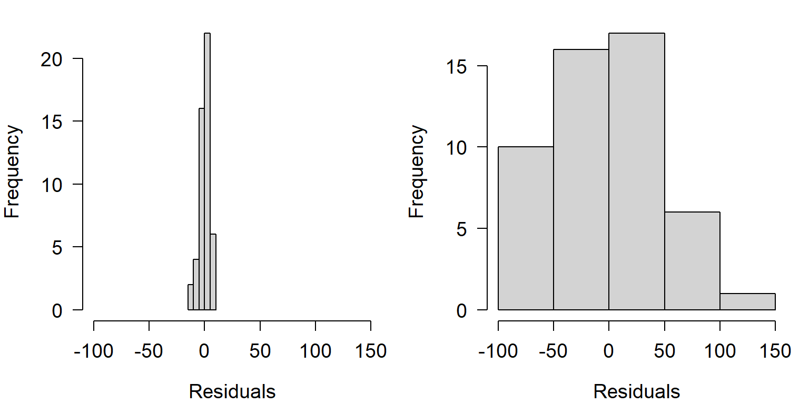
Notice also that both distributions of residuals have a similar shape, despite the difference in width. This shape is actually very important: the normal distribution. If the residuals were not distributed this way (i.e., did not follow a normal distribution), then we would be in trouble for two reasons. First, the data were generated using a normal distribution for residuals, so something would have had to have gone wrong with our statistical test; and second, the linear regression model used to analyze the data assumes that residuals are normally distributed. If they are not, then the test is not going to produce valid estimates of statistical significance or model parameters.
The example above is an example of the importance of thinking about statistical distributions when analyzing data. So just what is a statistical distribution? Distributions are mathematical functions that define the probabilities of random outcomes. Here random means that there is some element of chance in what we observe. This randomness is not completely unpredictable. While the outcome of specific observations might be unknowable, we can make predictions about long run frequencies or averages of lots of observations. In other words, single observations are not predictable, but the properties of sets of observations are. Such properties might include the number of times a specific outcome occurs (e.g., number of times a flipped coin comes up heads) or some summary of observations (e.g., the mean tail length of chipmunks). Another term for this kind of randomness that follows a pattern is stochastic.
Another example: coin flips
Consider flipping a coin. A fair coin will come up heads 50% of the time, and tails the other 50%. If you flip a coin once, the probability of getting heads is 50%. But what about if you flip the coin 10 times? How many heads should you get? 5 is a reasonable guess. The table below shows the possible outcomes to 10 coin flips:
| Heads | Tails |
|---|---|
| 0 | 10 |
| 1 | 9 |
| 2 | 8 |
| 3 | 7 |
| 4 | 6 |
| 5 | 5 |
| 6 | 4 |
| 7 | 3 |
| 8 | 2 |
| 9 | 1 |
| 10 | 0 |
This table shows that 5 heads is only one of 11 possibilities! So, is the probability of 5 heads 1 in 11 (\(1/11\approx0.091\))? Of course not, because not all outcomes are equally likely.
One of the reasons statistics is so fun is that we can often use simulation to discover patterns. The R code below will simulate the effects of flipping 1 coin 10 times. Run this code a few times and see what happens.
rbinom(1,10,0.5)[1] 4A typical run of results might be something like 4 5 5 4 3 5 6 6 5 5 4 6. We can repeat this line many times and graph the results:
x <- numeric(20)
for(i in 1:20){x[i] <- rbinom(1,10,0.5)}
plot(table(x))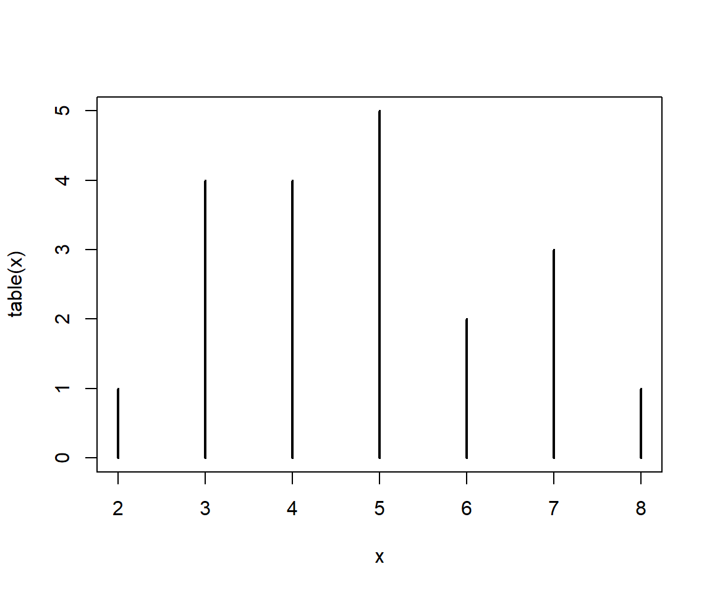
There is actually a faster way, by requesting 20 draws of 10 flips each all at once:
x <- rbinom(20,10,0.5)
plot(table(x))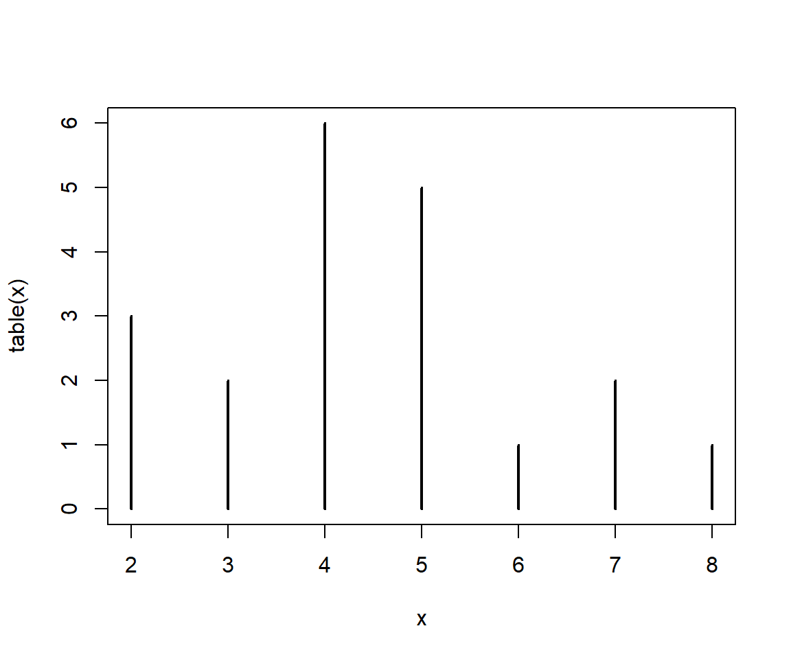
Is 5 the most likely value? What about if we get a larger sample?
x1 <- table(rbinom(10,10,0.5))
x2 <- table(rbinom(100,10,0.5))
x3 <- table(rbinom(1000,10,0.5))
x4 <- table(rbinom(10000,10,0.5))
x5 <- table(rbinom(100000,10,0.5))
x6 <- table(rbinom(1000000,10,0.5))
par(mfrow=c(2,3))
plot(x1, xlim=c(0, 10), main="n = 10")
plot(x2, xlim=c(0, 10), main="n = 100")
plot(x3, xlim=c(0, 10), main="n = 1000")
plot(x4, xlim=c(0, 10), main="n = 10000")
plot(x5, xlim=c(0, 10), main="n = 100000")
plot(x6, xlim=c(0, 10), main="n = 1000000")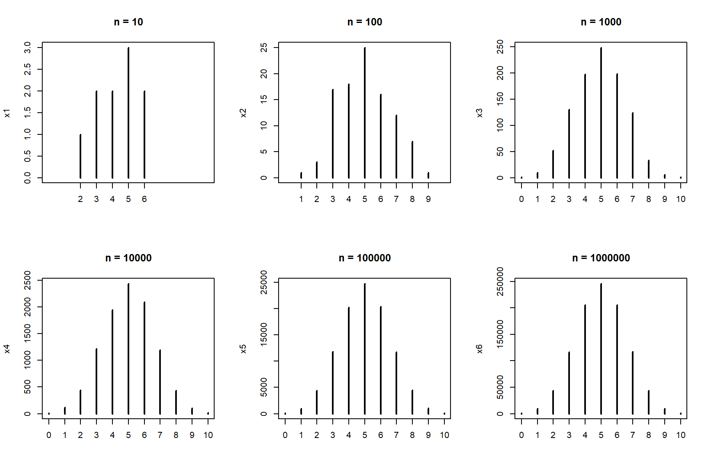
# reset graphical parameters
par(mfrow=c(1,1))You may have guessed by now that the properties of a set of coin flips—such as what number of heads to expect—are described by some kind of mathematical function. This function is called a probability distribution. This particular distribution is the binomial distribution, which describes the outcome of any random process with a binary outcome. The name “binomial” is descriptive: “bi” for two, and “nomial” for names or states. Can you think of a biological situation where the binomial distribution might apply?
The sections below describe some distributions commonly encountered in biology, and what kinds of processes give rise to them. It is important to be able to relate biological phenomena to statistical distributions, because the underlying nature of the randomness in some process can affect how we analyze that process statistically. Note that in this class we will focus on the practical applications of these distributions, rather than their mathematical derivations.
9.1.2 Probability distributions in R
Every distribution supported in R has four functions associated with it: r__(), q__(), d__(), and p__() , where __ is the name of the distribution (or an abbreviation). These 4 functions calculate different values defined by the distribution:
r__()draws random numbers from the distribution.p__()calculates the cumulative distribution function (CDF) at a given value. The reverse ofq__().d__()calculates the probability density function (PDF); i.e., the height of the density curve, or first derivative of the CDF.q__()calculates the value at a given quantile. The reverse ofp__().
The figure below shows these functions in relation to the PDF and CDF for a normal distribution.
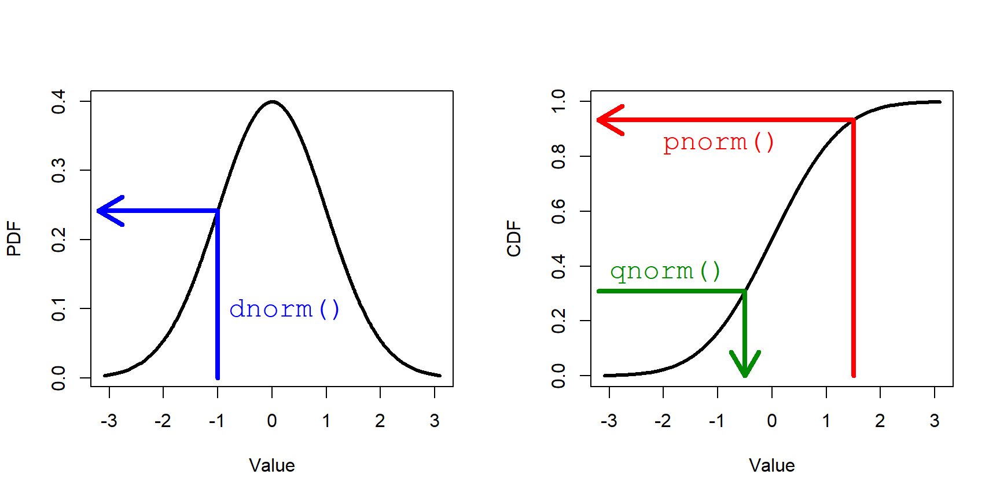
- If you want to know the value at the Xth percentile of a distribution, use the
q__function. - If you want to know the percentile of a value of a distribution, use the
p__function. - If you need to know the PDF of a distribution at some value, use the
d__function.
Here we see the functions used on a normal distribution with mean 20 and SD 4 (i.e., \(Normal\left(\mu=20,\sigma=4\right)\) or \(N\left(20,4\right)\)).
# 0.3 quantile (30th percentile)
qnorm(0.3, 20, 4)[1] 17.9024# What value is at the 64th percentile? (0.64 quantile)?
pnorm(0.65, 20,4)[1] 6.574119e-07# What is the PDF at x == 23?
dnorm(23, 20, 4)[1] 0.07528436One use case might be drawing a CDF or PDF of a distribution manually to compare to your data or some other distribution. For example, here is how to draw the CDF of a normal with mean 10 and SD 2:
# values at which to draw CDF
xvals <- seq(0, 20, length=1000)
# distribution parameters
mu <- 10
sigma <- 2
# calculate CDF
xcdf <- pnorm(xvals, mu, sigma)
# make the plot
plot(xvals, xcdf, type="l", xlab="Value of x", ylab="CDF(x)")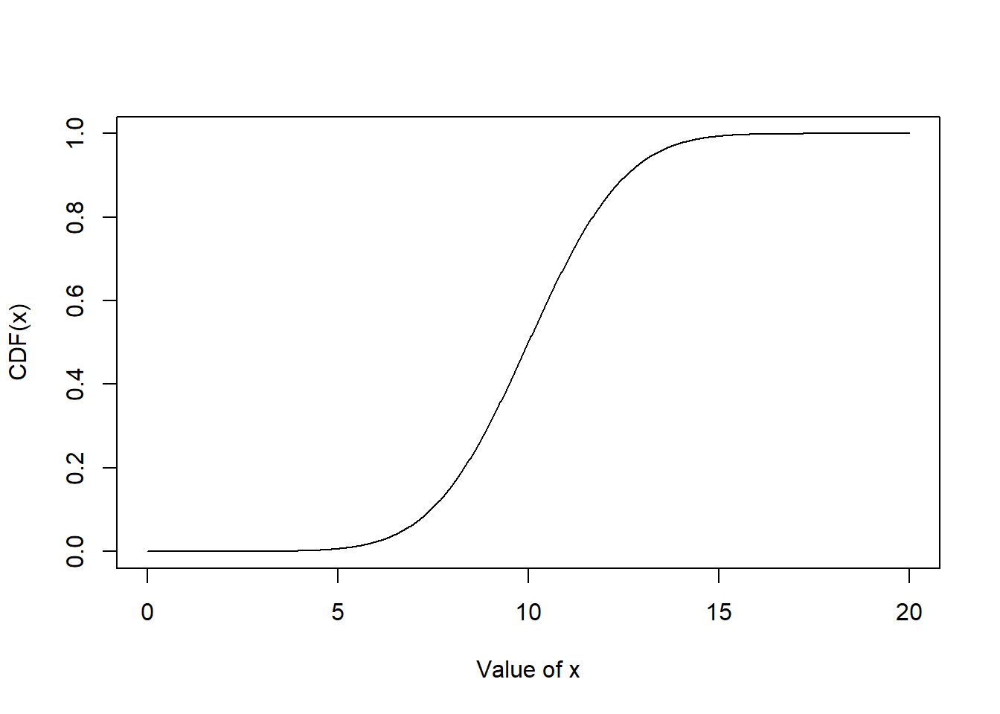
Here is how to draw the PDF of the same distribution:
# calculate CDF
xpdf <- dnorm(xvals, mu, sigma)
# make the plot
plot(xvals, xpdf, type="l", xlab="Value of x",
ylab="Probability density of x")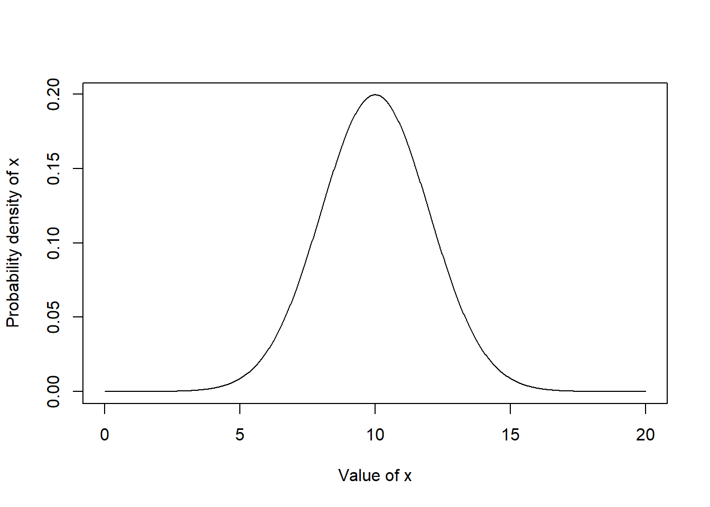
9.2 Discrete distributions
Discrete distributions can take on integer values only. Because of this, many discrete distributions are related in some way to count data. Count data result from, well, counting things. Count data can also describe the number of times something happened.
9.2.1 Bernoulli distribution
The simplest discrete distribution is the Bernoulli distribution. It describes the outcome of a single random event with probability p. Thus, the Bernoulli distribution takes the value 1 with probability p or the value 0 with probability \(q=\left(1-p\right)\). Any opportunity for the event to happen is also called a Bernoulli trial, and the process that it describes a Bernoulli process. The probability p can take on any value in the closed interval \(\left[0,1\right]\).
For convenience we usually consider a Bernoulli distribution to take the value of 0 or 1, but really it could represent any binary outcome. For example, yes vs. no, dead vs. alive, \(<3\) vs. \(\ge3\), etc., are all outcomes that could be modeled as Bernoulli variables. By convention, the event that occurs with probability p is considered a success and has the numerical value 1; the event that occurs with probability \(1-p\) is considered a failure and takes the numerical value 0. This is how Bernoulli variables are represented in most statistical packages, including R.
The Bernoulli distribution is rarely used on its own in an analysis. Instead, it’s useful to think of the Bernoulli distribution as a special case of, or a building block of, more complicated distributions such as the binomial distribution (Section 9.2.2). For example, a single observation of a binomially-distributed variable could be thought of as a Bernoulli distribution.
The Bernoulli distribution is a special case of the binomial distribution, and so it is accessed in R using the functions associated with the binomial. With the size argument set to 1, the binomial distribution is the Bernoulli distribution.
# flip one fair coin
rbinom(1, 1, 0.5)[1] 0# flip 10 fair coins
rbinom(10, 1, 0.5) [1] 1 1 0 1 1 0 1 0 1 1# flip 10 coins with a 70% chance of heads
rbinom(10, 1, 0.7) [1] 0 1 1 0 1 1 0 0 0 19.2.2 Binomial distribution
The binomial distribution describes the number of successes in a set of independent Bernoulli trials. Each trial has probability of success p, and there are n trials. The values n and p are the parameters of the binomial distribution–the values that describe its behavior. The coin flipping example above is an example of a binomial distribution. Biological examples of binomial processes might be the number of fish that die in an experiment, or the number of plants that flower in a season. In such a case, the number of fish that start the experiment is the sample size n and the individual mortality rate is p.
Because it is so simple, thinking about the binomial distribution is a good warm up for learning about the characteristics of probability distributions. One of the most important characteristics is the expected value of the distribution. This is the value that most likely to occur, or the central tendency of values. There are several kinds of expected value, but they are all related to the most common or central value. The expected value, or mean, of a binomial distribution X is
\[E\left(x\right)=\mu=np\]
This is the answer to the question earlier about how many heads to expect if a fair coin is flipped 10 times:
\[E(heads)=n(flips)p(heads)\]
If a variable comes from a binomial process, we can make other inferences about it. For example, we can estimate its variance as:
\[Var\left(x\right)=\sigma^2=np(1-p)=npq\]
We can also estimate the probability of any number of successes k as:
\[P\left(k\right)=\left(\begin{matrix}n\\k\\\end{matrix}\right)p^k\left(1-p\right)^{n-k}\]
The first term (n over k) is known as the binomial coefficient and is calculated as:
\[\left(\begin{matrix}n\\k\\\end{matrix}\right)=\frac{n!}{k!\left(n-k\right)!}\]
This term represents the number of ways of seeing k successes in n trials. For example, a set of 4 trials could have 2 successes in 6 ways: HHTT, HTHT, THHT, HTTH, THTH, and TTHH.
When n is small, the binomial distribution can be quite skewed (i.e., asymmetric) because the distribution has a hard lower bound of 0. Note that the expression for \(P(k)\) is what is calculated by function dbinom() below, and related to what is calculated by function pbinom(). For large n, the binomial distribution can be approximated by a normal distribution1 with mean = np and variance = npq.
9.2.2.1 Binomial distribution in R
R uses a family of 4 functions to work with each probability distribution. The binomial and Bernoulli distributions are accessed using the _binom group of functions: dbinom(), pbinom(), qbinom(), and rbinom(). Each function calculates or returns something different about the binomial distribution:
dbinom(): Calculates probability mass function at x for binomial distribution given n and p. Answers the question “What is the probability of x successes in n trials with probability p?”pbinom(): Calculates integral of the probability mass function for a binomial distribution given n and p, from 0 up to x. In other words, given some binomial distribution, at what quantile of that distribution should some value fall? The reverse ofqbinom(). Answers the question “What is the probably of at least x successes in n trials with probability p?”qbinom(): Calculates the value at specified quantile of a binomial distribution. Essentially the reverse ofpbinom().rbinom(): Draws random numbers from the binomial distribution defined by n and p (or from the Bernoulli distribution if n = 1).
Let’s explore the binomial distribution using these functions. In the plots produced in the two examples, notice how the variance of each distribution (x1, x2, etc.) depends on both n and p. The variance in these plots is shown by the width of the distribution.
# N = 100, P various
N <- 100
X <- 0:100
x1 <- dbinom(X, N, 0.2)
x2 <- dbinom(X, N, 0.4)
x3 <- dbinom(X, N, 0.6)
x4 <- dbinom(X, N, 0.8)
par(mfrow=c(1,1))
plot(X, x1, pch=16, xlab="X", ylab="PMF")
points(X, x2, pch=16, col="red")
points(X, x3, pch=16, col="blue")
points(X, x4, pch=16, col="green")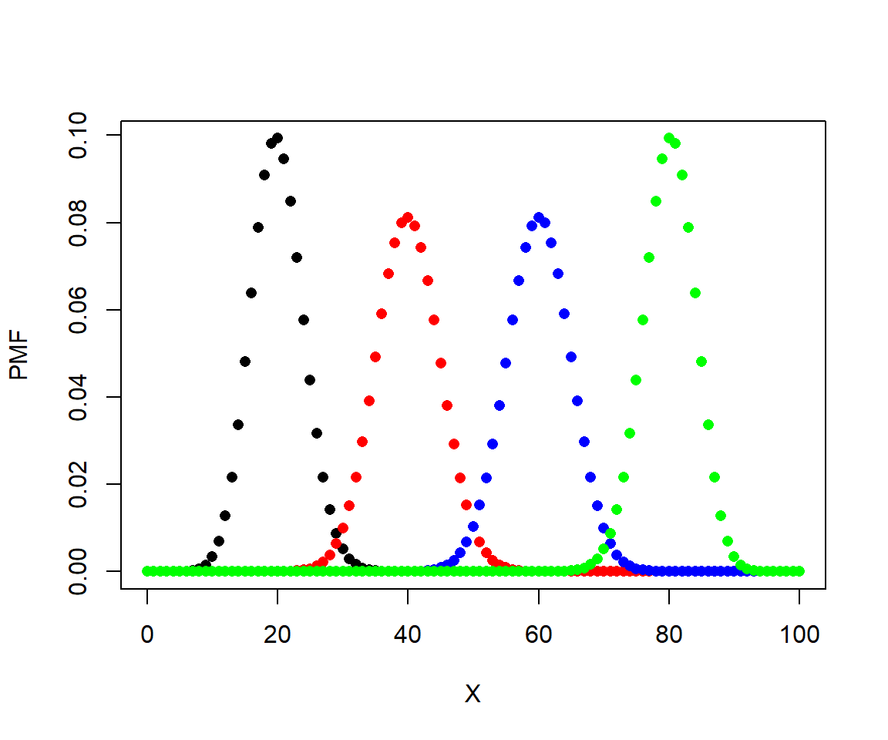
Here is a plot showing the effect of varying n.
# P = 0.5, N various
P <- 0.5
x1 <- dbinom(0:100, 20, P)
x2 <- dbinom(0:100, 40, P)
x3 <- dbinom(0:100, 60, P)
x4 <- dbinom(0:100, 80, P)
x5 <- dbinom(0:100, 100, P)
plot(0:100, x1, pch=16, xlab="X", ylab="PMF")
points(0:100, x2, pch=16, col="red")
points(0:100, x3, pch=16, col="blue")
points(0:100, x4, pch=16, col="green")
points(0:100, x5, pch=16, col="purple")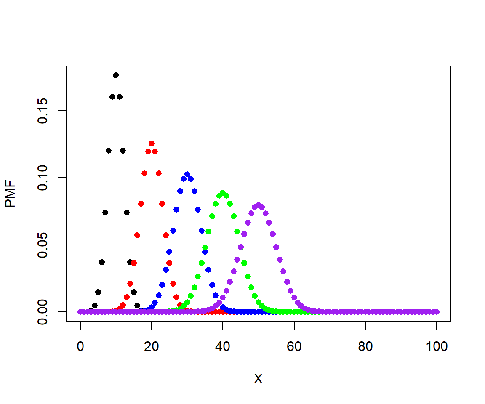
In these plots, the height of the points is called the probability mass function (PMF). For discrete distributions like the binomial, the PMF of any value is the probability that the distribution takes on that value. The sum of the PMF for all integers from 0 to n (inclusive) must be equal to 1. You can verify this by calculating the sum of any of the vectors of densities above.
The function pbinom() sums the PMF from 0 up to and including some value. In other words, it calculates the cumulative distribution function (CDF). This answers the question “where in the distribution is value x?”; put another way, “at what quantile of the distribution does value x lie?”. Yet another way to ask this is, “What is the probability of at least X successes?”.
Consider a binomial distribution with \(n=10\) and \(p=0.5\). What is the probability that the distribution takes a value \(\le7\)? We can calculate this as the sum of the PMF for 0 through 7.
# plot the distribution to see it
N <- 10
P <- 0.5
xd <- dbinom(0:10, N, P)
plot(0:10, xd, type="h", xlab="X", ylab="PMF")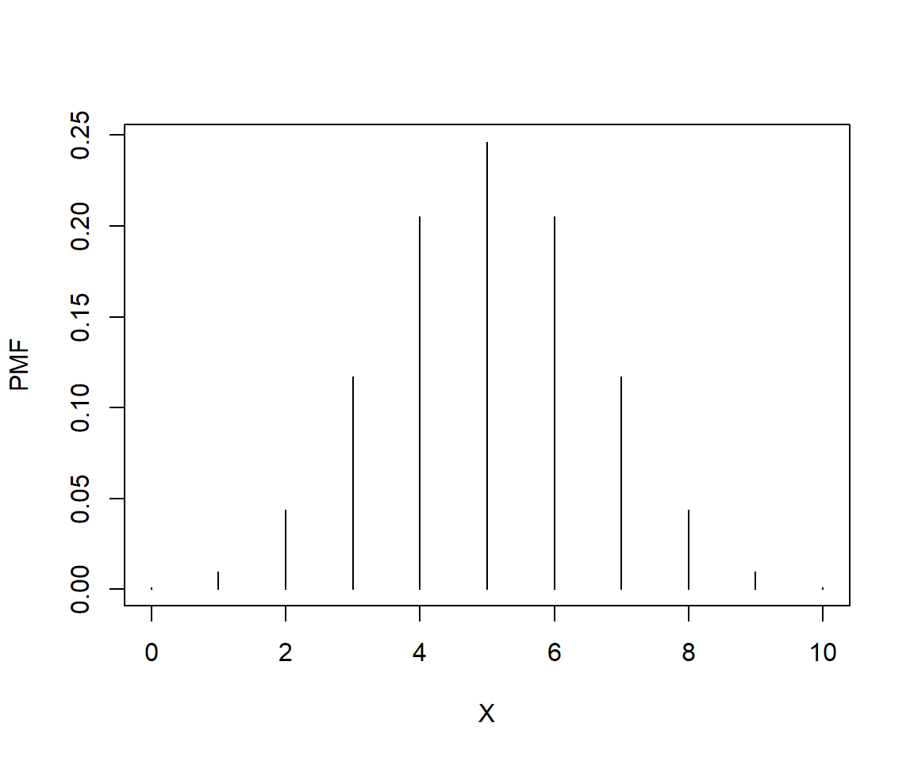
# calculate p(x<=7)
sum(xd[1:8]) # indices 1:8 correspond to values 0:7[1] 0.9453125# same value:
pbinom(7, N, P)[1] 0.9453125Or, we could want to know the probability that the distribution takes on a value \(>6\). This would be the complement of the sum up to and including 6.
1-sum(xd[1:7])[1] 0.171875# same value:
1-pbinom(6,N,P)[1] 0.171875If the last two calculations seem familiar, that’s because this is exactly how p-values for statistical tests are calculated (e.g., using pf() to get the probability from an F distribution for an ANOVA).
The function qbinom() is basically the reverse of function pbinom(). Rather than calculate the quantile at which a value falls in the distribution, qbinom() calculates the value at which a quantile falls. For example, what value do we expect to find at the 60th percentile of a distribution? Put another way, how many successes should 60% of experiments have, on average? The example below shows how qbinom() and pbinom() are reversible.
N <- 10
P <- 0.5
pbinom(6, N, P)[1] 0.828125# same value
qbinom(0.828125, N, P)[1] 6Finally, rbinom() draws random values from the binomial or Bernoulli distributions. The syntax of this function can be a little confusing. The first argument, n, is the number of random draws that you want. The second argument, size, is the number of values in each draw; that is, the parameter n of the binomial distribution. Compare these results, all with p = 0.5:
# 1 draw of 1 trial
rbinom(1, 1, 0.5)[1] 0# 1 draw of 10 trials
rbinom(1, 10, 0.5)[1] 8# 10 draws of 1 trial per draw
rbinom(10, 1, 0.5) [1] 0 0 1 0 1 1 1 0 1 0# 10 draws of 10 trials per draw
rbinom(10, 10, 0.5) [1] 3 5 5 7 3 5 5 5 4 3- Result 1 shows a Bernoulli distribution with n = 1.
- Result 2 shows a single value from a binomial distribution with n = 10.
- Result 3 shows 10 results from Bernoulli distributions. Notice that if you add up the values in Result 3, you get a result like Result 2.
- Finally, Result 4 shows 10 draws from a binomial distribution, which itself has n = 10.
The take home message is that the first argument to rbinom() is not a parameter of the binomial distribution. It is instead the number of draws from the distribution that you want. The size parameter is the argument that helps define the distribution.
9.2.3 Poisson distribution
The Poisson distribution is widely used in biology to model count data. If your data result from some sort of count or abundance per time interval, spatial extent, or unit of effort, then the Poisson distribution should be one of the first things to try in the analysis. The Poisson distribution has one parameter, \(\lambda\) (“lambda”), which represents the expected number of objects counted in a sample (objects being trees, fish, cells, mutations, kangaroos, etc.). This parameter is also the variance of the distribution. This is a very important property, as we will see later: the expected value and the variance of the Poisson distribution are both \(\lambda\):
\[E\left(X\right)=Var\left(X\right)=\lambda\]
Like the binomial distribution, the Poisson distribution is discrete, meaning that it can only take on integer values. Unlike the binomial distribution, which is bounded by 0 and n, the Poisson distribution is bounded by 0 and \(+\infty\). However, values \(\gg \lambda\) are highly improbable. If there is a well-defined upper bound for your count, then you might consider them to come from a binomial model instead of a Poisson model. For example, if you are counting the number of fish in a toxicity trial that survive, the greatest possible count is the number of fish in the trial. This means that your “count” is really another way of representing a proportion. On the other hand, if your counts have no a priori upper bound, then use the Poisson.
9.2.3.1 Poisson distribution in R
The Poisson distribution is accessed using the _pois group of functions, where the space could be d, p, q, or r. These functions calculate or returns something different:
dpois(): Calculates probability mass function (PMF) at x for Poisson distribution given \(\lambda\). Answers the question, “what is the probability of observing a count of x given \(\lambda\)?”ppois(): Calculates CDF, or integral of PMF, from 0 up to x given \(\lambda\). In other words, given some Poisson distribution, at what quantile of that distribution should some value fall? The reverse ofqpois().qpois(): Calculates the value at specified quantile of a Poisson distribution. The reverse ofppois().rpois(): Draws random numbers from the Poisson distribution defined by \(\lambda\).
Something important to keep in mind about the Poisson distribution is that it only makes sense for discrete counts, not for continuous measurements that are rounded. For example, if you are measuring leaf lengths and round every length to the nearest mm, it might be tempting to use a Poisson distribution to analyze the data because all of the values are integers. But that would be incorrect, because leaf lengths could theoretically take on any positive value. Furthermore, treating rounded continuous values as discrete leads to the awkward issue that changing measurement units can change dimensionless statistics.
For example, the coefficient of variation (CV) is the ratio of a distribution’s SD to its mean. Thus, it is unitless and should be independent of units. The CV of a Poisson distribution X is:
\[CV\left(X\right)=\frac{\sqrt\lambda}{\lambda}\]
So, if you measured 20 leaves and found a mean length of 17 cm, the CV would thus be \(\approx\) 0.242 or 24%. But if you convert the measurements to mm, the CV would be about 0.077, or 7.7%!
The figure below shows the effect of varying \(\lambda\) on a Poisson distribution.
x <- 0:40
lams <- c(1,5, 10, 20)
nlams <- length(lams)
dlist <- vector("list", nlams)
for(i in 1:nlams){dlist[[i]] <- dpois(x, lams[i])}
cols <- rainbow(nlams)
par(mfrow=c(1,1), mar=c(5.1, 5.1, 1.1, 1.1),
las=1, bty="n", lend=1,
cex.lab=1.3, cex.axis=1.3)
plot(x, dlist[[1]], ylim=c(0, max(sapply(dlist, max))),
type="n", ylab="PMF", xlab="Value (x)")
for(i in 1:nlams){
points(x, dlist[[i]], pch=i, cex=1.3,
col=cols[i])
}
legend("topright", legend=lams,
pch=1:nlams, pt.cex=1.3, col=cols, bty="n", cex=1.3,
title=expression(lambda))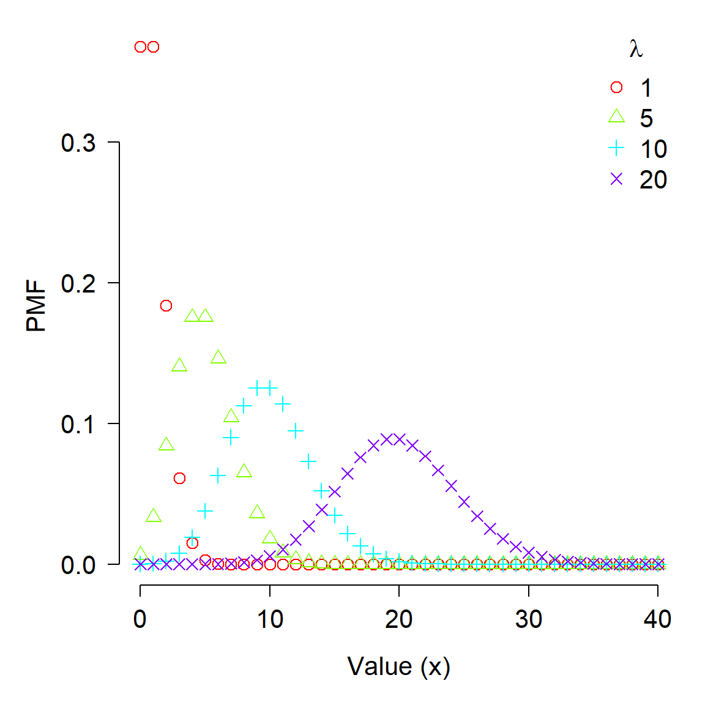
9.2.4 Negative binomial distribution
The negative binomial distribution as usually used in biology is used for counts that are overdispersed–that is, they have a variance greater than expected given other parameters. In this case, that means \(\sigma^2>>\lambda\). This is very common in biological count data. For example, a bird species might have low abundance (0 to 4) at most sites in a study, but very high abundance (30 to 40) at a handful of sites. In that case using the Poisson distribution would not be appropriate because doing so would mean assuming that the variance was approximately equal to the mean when it really wasn’t.
The definition that is not used as commonly in biology is actually the original definition: the negative binomial distribution also describes the number of failures that occur in a series of Bernoulli trials until some predetermined number of successes is observed. For example, when flipping a fair coin, how many times should you expect to see tails before you observe 8 heads? This definition is, therefore, a discrete version of the gamma distribution. This also makes the original definition of the negative binomial similar to the geometric distribution (Section 9.2.5).
The version of the negative binomial that biologists use is parameterized by its mean \(\mu\) and its overdispersion \(k\). This definition views the negative binomial as a Poisson distribution with parameter \(\lambda\), where \(\lambda\) itself is a random variable that follows a Gamma distribution (Section 9.3.4). For this reason, some authors refer to the negative binomial as a Gamma-Poisson mixture distribution. A mixture distribution is exactly what it sounds like: a distribution that is formed by “mixing” or combining two distributions. Often a mixture is formed by having parameters of one distribution vary according to another distribution.
The overdispersion parameter \(k\) is called size in the R functions that work with the negative binomial. Counterintuitively, the overdispersion in a negative binomial distribution gets larger as \(k\) becomes smaller. This is seen in the expression for the variance of a negative binomial distribution:
\[Var\left(X\right)=\mu+\frac{\mu^2}{k}\]
As \(k\) becomes large, the ratio \(\mu^2/k\) becomes small and approaches 0, and thus \(Var(x)\) approaches \(\mu\). This means that a negative binomial distribution with large \(k\) approximates a Poisson distribution. As \(k\) approaches 0, the ratio \(\mu^2/k\) becomes larger, and thus \(Var(x)\) increases to be much larger than \(\mu\).
9.2.4.1 Negative binomial distribution in R
The negative binomial distribution is accessed using the _nbinom group of functions, where the space could be d, p, q, or r. These functions calculate or returns something different:
dnbinom(): Calculates PMF at x. Answers the question, “what is the probability of observing a count of x?”pnbinom(): Calculates CDF, or integral of PMF, from 0 up to x. In other words, given some negative binomial distribution, at what quantile of that distribution should some value fall? The reverse ofqnbinom().qnbinom(): Calculates the value at specified quantile of a Poisson distribution. The reverse ofpnbinom().rnbinom(): Draws random numbers from the negative binomial distribution.
The R functions for the negative binomial distribution can work with either parameterization (waiting time or mean with overdispersion). Some of the argument names are used for both methods. If you are working with the negative binomial distribution in R you need to name your arguments to make sure you get the version of the negative binomial that you want.
The figure below shows the effect of different overdispersion parameters. Notice that as \(k\) increases, the distribution looks more and more like a Poisson distribution with \(\lambda = 10\). As \(k\) gets smaller, the distribution gets more and more concentrated near 0, and more and more right-skewed.
xp <- 0:30
y1 <- dpois(xp, 10)
y2 <- dnbinom(xp, size=0.2, mu=10)
y3 <- dnbinom(xp, size=0.5, mu=10)
y4 <- dnbinom(xp, size=1, mu=10)
y5 <- dnbinom(xp, size=10, mu=10)
y6 <- dnbinom(xp, size=50, mu=10)
y7 <- dnbinom(xp, size=100, mu=10)
cols <- rainbow(6)
par(mfrow=c(1,1), mar=c(5.1, 5.1, 1.1, 1.1),
las=1, bty="n", lend=1,
cex.lab=1.3, cex.axis=1.3)
plot(xp, y1, pch=17, ylim=c(0, 0.5), xlab="X", ylab="PMF")
points(xp, y2, pch=16, col=cols[1])
points(xp, y3, pch=16, col=cols[2])
points(xp, y4, pch=16, col=cols[3])
points(xp, y5, pch=16, col=cols[4])
points(xp, y6, pch=16, col=cols[5])
points(xp, y7, pch=16, col=cols[6])
legend("topright",
legend=c("Poisson", "k=0.2", "k=0.5", "k=1", "k=10",
"k=50", "k=100"),
pch=c(17, rep(16,6)), col=c("black", cols))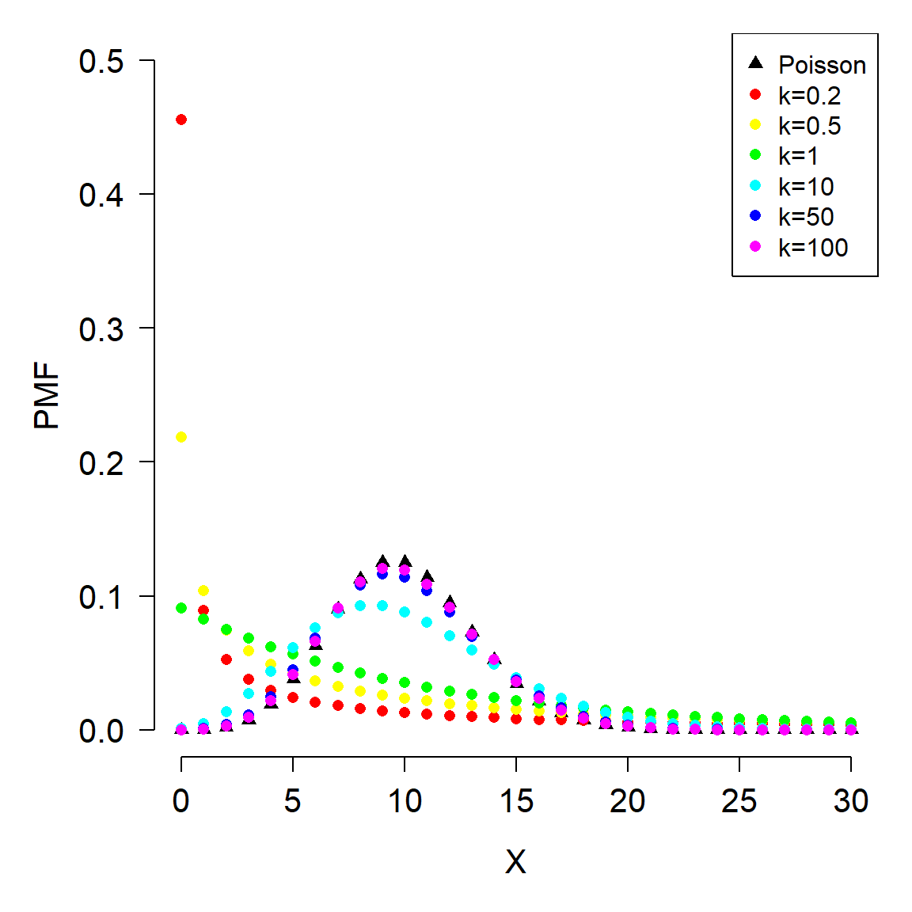
9.2.5 Geometric distribution
The geometric distribution describes the number of failures that are seen before observing the first success, given that the probability remains constant. It is thus related to the binomial and negative binomial. In fact, the geometric distribution is a special case of the negative binomial, with the number of successes = 1. The geometric distribution is the discrete version of the exponential distribution.
The geometric distribution arises in biology when modeling waiting times or life spans in discrete time steps. For example, if an animal has a constant annual mortality rate, the geometric distribution models the number of years that an individual organism completes before dying. Age- or stage-based population matrix models such as Leslie matrices are common in wildlife and fisheries management, and are based on annual monitoring data. So, it makes sense to use a discrete distribution to model survival in yearly time steps rather than continuous time. Another biological example of when to use a geometric distribution would be counting the number of generations until a mutation in a cell line occurs, if mutations occur at a constant rate per generation.
Imagine a fish that has a 5% probability of dying each year (i.e., a 95% annual survival rate). If \(X\) is the number of complete years the fish survives before dying, then \(X\) follows a geometric distribution with \(p=0.05\). Let’s simulate a cohort of 100,000 fish to see what this looks like.
# set annual mortality rate
P <- 0.05
# simulate 100000 fish
fish <- rgeom(1e5, P)
# plot the resulting lifespans
use.breaks <- seq(-0.5, max(fish)+0.5, by=1)
hist(fish, breaks=use.breaks, freq=FALSE, xlim=c(0, 80),
xlab="Years survived before death")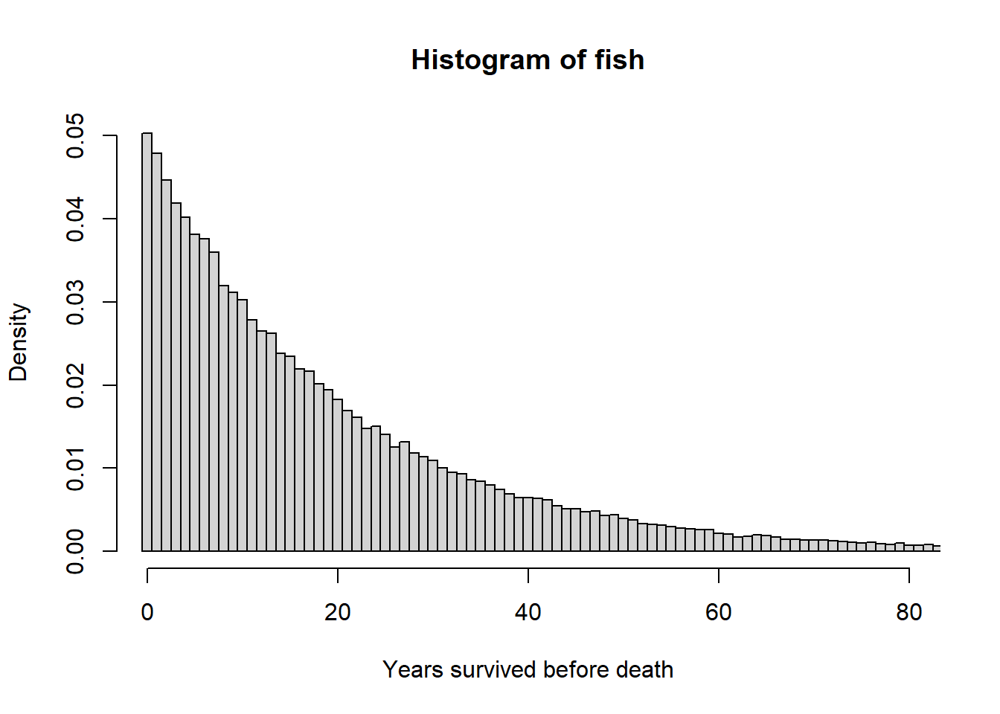
Notice that the distribution of simulated fish lifespans has a long right tail: there are many small values, and a few very large values. We also call this right skewed. Practically, this means that while the median lifespan is 13 years, the average fish lives to 19. The long tail pulls the arithmetic mean upwards.
# by what age do 50% of fish die?
median(fish)[1] 13# how long does the "average" fish live?
mean(fish)[1] 19.07688Compare our simulation to the theoretical distribution:
X <- 0:max(fish)
pmf <- dgeom(X, P)
hist(fish, breaks=use.breaks, freq=FALSE, xlim=c(0, 80),
xlab="Years survived before death",
ylim=c(0, 0.05),
main="Simulated vs. theoretical distribution")
points(X,pmf, type="s", lwd=2, col="red")
meanfish <- round(mean(fish),0)
segments(meanfish, 0, meanfish, dgeom(meanfish,P),
lwd=2, col="blue")
# calculate theoretical mean - matches simulation
theomean <- (1-P)/P
segments(theomean, 0, theomean, dgeom(theomean,P),
lwd=2, lty=2, col="black")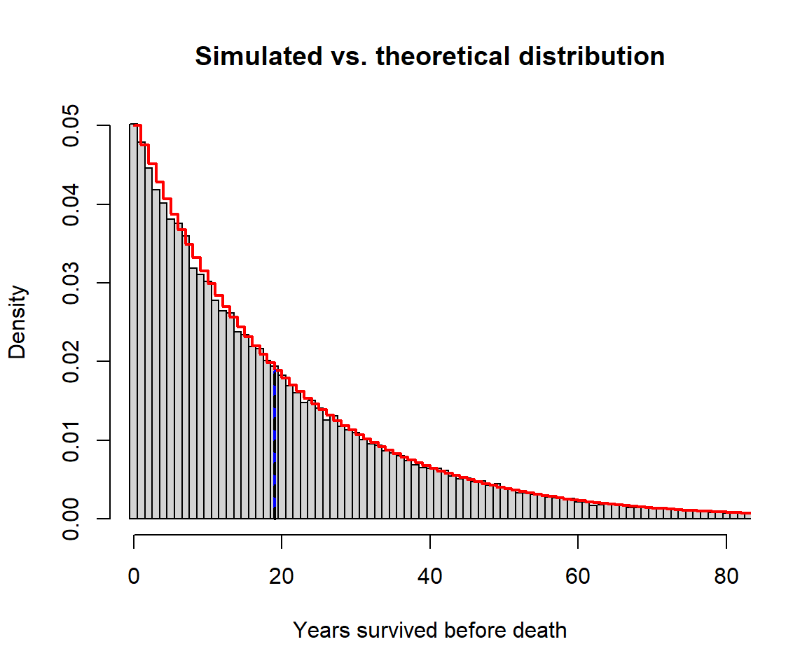
The figure shows that the probability of living to any given age falls off quickly at first, then more gradually as time goes on. We can also answer questions like “What is the probability that a fish lives to at least 30 years old?
# answer based on simulation
# off a bit because of sampling variation
length(which(fish >= 30)) / length(fish)[1] 0.21554# answer based on distribution:
pgeom(29, P, lower.tail=FALSE)[1] 0.2146388Or equivalently:
(1-P)^30[1] 0.2146388What age will 95% of fish reach?
qgeom(0.95, P)[1] 589.2.6 Multinomial distribution
The multinomial distribution is a generalization of the binomial distribution to cases with more than 2 possible outcomes. For example, rolling a 6-sided die many times would yield a distribution of outcomes (1, 2, 3, 4, 5, or 6) described by the multinomial distribution. The multinomial distribution is parameterized by the number of possible outcomes k, the number of trials n, and the probabilities of each outcome \(p_1, \ldots, p_k\). The probabilities must sum to 1.
There are some special cases of the multinomial distribution:
- When \(k=2\) and \(n=1\), the multinomial distribution reduces to the Bernoulli distribution
- When \(k=2\) and \(n>1\), the multinomial distribution reduces to the binomial distribution
- When \(k>2\) and \(n=1\), the multinomial distribution is the categorical distribution.
The example below shows how to work with the multinomial distribution in R.
# define 2 different sets of probabilities for
# 5 different outcomes
p1 <- c(0.2, 0.2, 0.1, 0.1, 0.4)
p2 <- c(0.1, 0.2, 0.4, 0.2, 0.1)
# sample from the multinomial distribution
N <- 1e3
r1 <- rmultinom(N, N, prob=p1)
r2 <- rmultinom(N, N, prob=p2)
# summarize by outcome
y1 <- apply(r1, 1, mean)
y2 <- apply(r2, 1, mean)
# plot the results
plot(1:5, y1, pch=16, xlab="X",
ylab="Frequency", ylim=c(0, 1000))
points(1:5, y2, pch=16, col="red")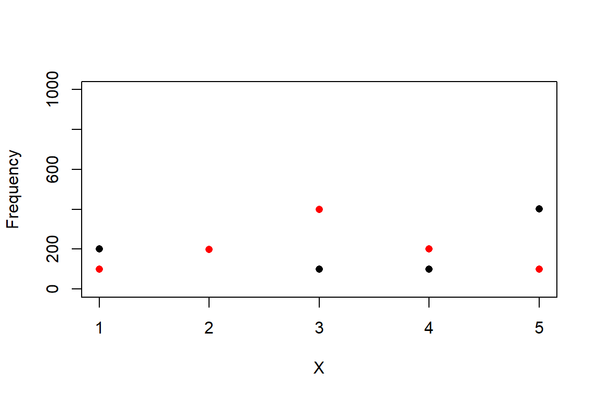
9.3 Continuous distributions
A continuous distribution can take on any real value within its supported interval. This means that unlike discrete distributions, continuous distributions are not restricted to integers. Measurements like length, mass, temperature, etc., are best modeled using continuous distributions because, although we often record them to the nearest mm, gram, or degree, the underlying quantity varies continuously. The apparent discreteness comes from the limited precision of our measuring instruments.
Computing the probability of any possible outcome of a discrete distribution is relative straightforward because there are a limited number of outcomes. For example, a binomial distribution with \(n=10\) and \(p=0.5\) has only 11 possible outcomes \(\left(0,1,2,\ldots,9,10\right)\). The probabilities \(p\left(x=0\right)\), \(p\left(x=1\right)\), and so on up to \(p\left(x=10\right)\) must all sum to 1. The probability mass function (PMF) of the binomial distribution at any value is the probability of that value occurring.
This leads to an interesting question. How could we calculate the probability of any given outcome of a distribution with an infinite number of outcomes? If the probabilities of each individual value must all sum to 1, and there are infinitely many possible values, then each individual value must have probability 0. If the probability of every possible outcome is 0, how can the distribution take on any value at all?
To resolve this apparent contradiction, we have to take a step back and think about what distributions really mean. The first step is to realize that even if any single value has probability 0, an interval of values can have a non-zero probability. After all, the entire supported interval of a distribution has probability 1 by definition. We can define some interval extending from the lower limit of the distribution up to some value \(x\). This means that for any value \(x\) in a distribution \(X\) (note lower case vs. upper case) we can calculate the probability of observing a value \(\le{x}\), or \(p\left(X\le{x}\right)\). The figure below shows this:
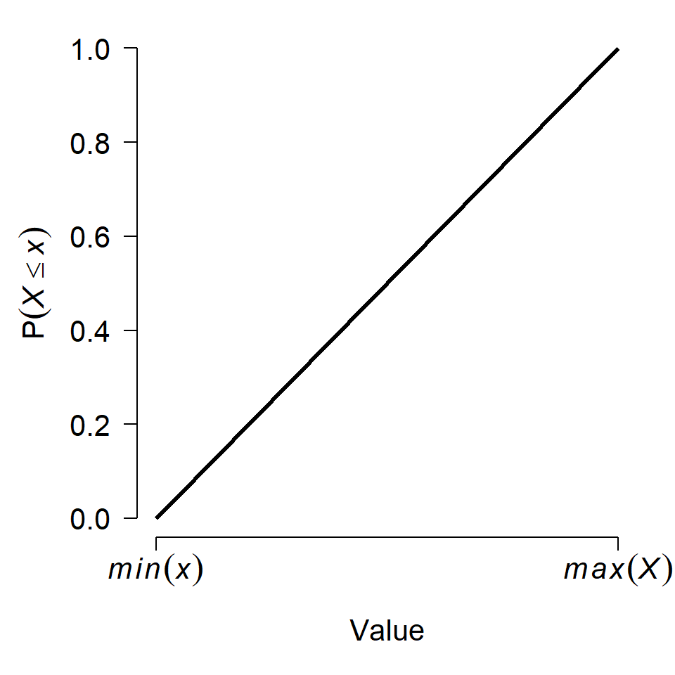
The y-axis in the figure, \(P\left(X\le{x}\right)\), is called the cumulative distribution function (CDF). This name derives from the fact that the CDF of some value \(x\) gives the cumulative or total probability of all values up to and including \(x\). The CDF is sometimes labeled \(F\left(x\right)\) (note the capitalized F). Another way to interpret this is that a value \(x\) lies at the \(CDF\left(x\right)\) quantile of a distribution. For example, if \(CDF\left(x\right)=0.4\), then \(x\) lies at the 0.4 quantile or 40th percentile of the distribution. Critically, this means that 40% of the total probability of the distribution lies at or to the left of \(x\), and the remaining 60% of the probability lies to the right of \(x\).
Just as the PMF describes how probability is distributed among the possible values of a discrete random variable, the probability density function PDF describes how probability is distributed over the continuum of possible values. Although the PDF is not itself a probability, the area under the PDF between any two values equals the probability that the random variable falls within that interval. Mathematically, the PDF is the rate at which the CDF changes with respect to \(x\). That is, the PDF, \(f\left(x\right)\), is the derivative of the CDF \(F\left(x\right)\) evaluated at \(x\):
\[f\left(x\right)=\frac{dF(x)}{dx}\]
This also means that the CDF is the integral of the PDF up to \(x\), according to the fundamental theorem of calculus:
\[F\left(x\right)=\int_{-\infty}^{x}{f\left(x\right)\ dx}\]
In other words, probabilities correspond to areas under the PDF, while the PDF itself represents the local density of probability. These areas under the PDF correspond to values of the CDF.
This might be easier to see with an example. The plots below show the PDF and CDF of a standard normal distribution with mean 0 and SD 1 (Section 9.3.2). Because the normal is unbounded, its PDF and CDF have the domain \([-\infty,+\infty]\), but we usually truncate the plot to a range that covers most of the CDF. For the normal, the mean plus or minus 3 standard deviations, or \(\mu\pm{3\sigma}\), covers over 99.7% of values.
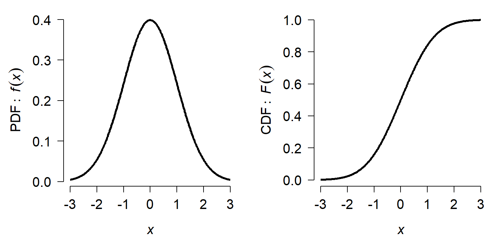
On the left, notice that the PDF peaks near \(x=0\) and tapers off quickly to either side. On the right, the slope of the CDF is greatest at \(x=0\). The value of the PDF at \(x=0\), about 0.4, is neither the probability of observing \(x=0\) (which is 0) nor the probability of observing \(x\le0\) (which is 0.5). The value \(f(0)=0.4\) is the rate of change or slope in \(F(X)\) at \(x=0\).
If we wanted to calculate something like the probability of \(x=0\), we would actually have to calculate the probability of \(x\) being in some interval that included 0. For example, the probability that \(-0.1\le{X}\le+0.1\), or that \(X\in\left[-1,+1\right]\), is
\[P\left(-0.1\le{X}\le+0.1\right)=F\left(0.1\right)-F\left(-0.1\right)\]
In R we can calculate:
pnorm(0.1)-pnorm(-0.1)[1] 0.07965567So the probability that \(x\) is within 0.1 of 0 is about 0.08 or 8%. If we use a narrow interval, say \(-0.01\le{X}\le+0.01\), the calculation becomes:
pnorm(0.01)-pnorm(-0.01)[1] 0.007978713Notice that as the interval becomes narrower, its probability becomes smaller. In the limit as the interval shrinks to a single point, the probability becomes 0. This is why the probability of observing any exact value in a continuous distribution is zero, even though the probability of observing values within any finite interval is positive.
Visually, we can see this in the figure below. Notice how the red area is much larger than the light blue area–these are the intervals defined by \(\pm{0.1}\) and \(\pm{0.01}\).
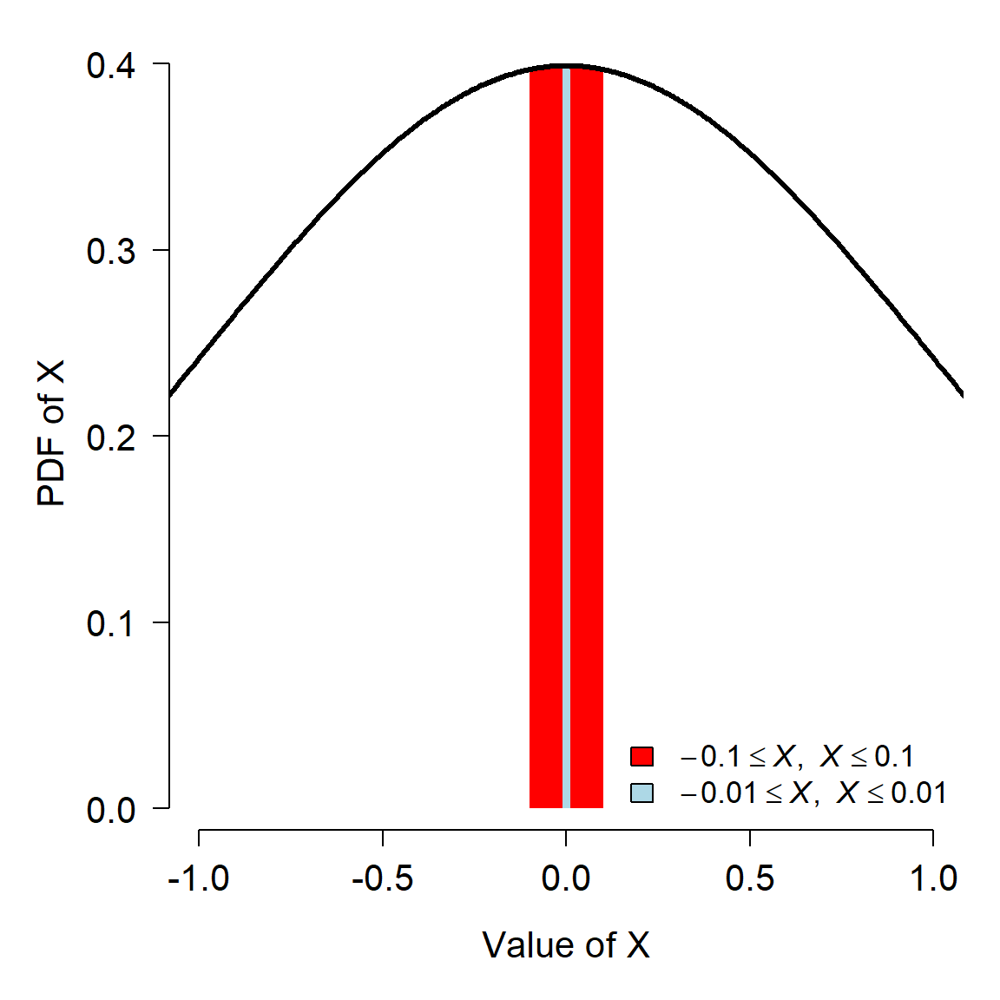
9.3.1 Uniform distribution
The simplest continuous distribution is the uniform distribution. The uniform distribution is parameterized by its upper and lower bounds, usually called \(a\) and \(b\), respectively. All values of a uniform distribution in the interval \(left[a,b\right]\) are equally likely, and all values outside \(left[a,b\right]\) have probability 0. The figure below shows the PDFs of 3 different uniform distributions.
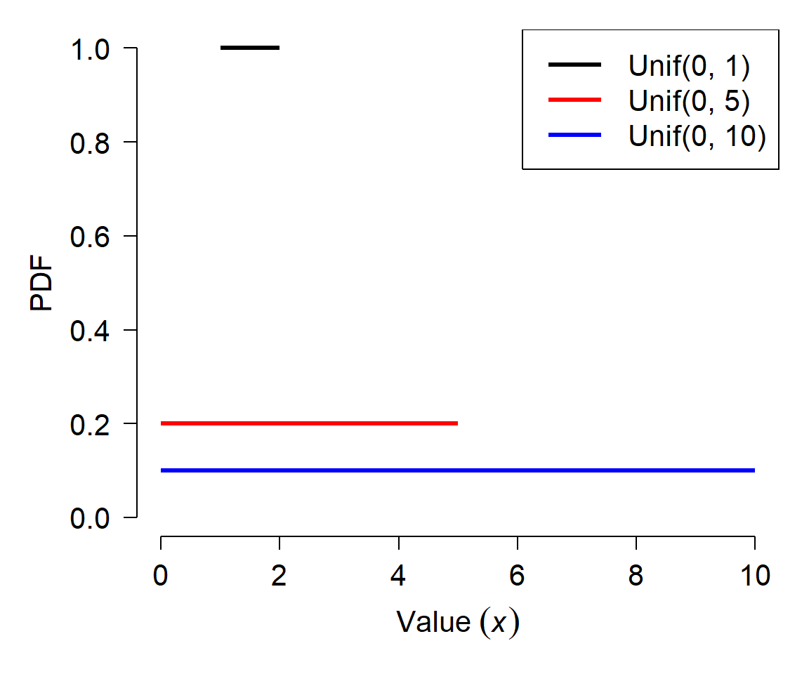
Notice how each distribution has a flat PDF, but that the value of the PDF decreases as the width of the uniform distribution increases. Given what you learned above about the relationship between the CDF and the PDF, can you work out why this is?2
Like the normal distribution, there is a standard uniform distribution that is frequently used. The standard uniform is defined as \(Uniform\left(0,1\right)\): a uniform distribution in the interval \(\left[0,1\right]\). The uniform distribution can sometimes be abbreviated as \(U\left(a,b\right)\) or \(Unif\left(a,b\right)\).
The mean of a uniform distribution is just the mean of its limits:
\[\mu\left(Uniform\left(a,b\right)\right)=\frac{a+b}{2}\]
The variance of a uniform distribution is:
\[\sigma^2\left(Uniform\left(a,b\right)\right)=\frac{{(b-a)}^2}{12}\]
9.3.1.1 Uniform distribution in R
The uniform distribution is accessed using the _unif group of functions, where the space could be d, p, q, or r. These functions calculate or returns something different:
dunif(): Calculates probability density function (PDF) at x.punif(): Calculates CDF, from a up to x. Answers the question, “at what quantile of the distribution should some value fall?”. The reverse ofqunif().qunif(): Calculates the value at a specified quantile or quantiles. The reverse ofpunif().runif(): Draws random numbers from the uniform distribution.
The help files for many R functions include a call to runif() to generate example values from the uniform distribution. This can be confusing to new users, who might interpret “runif” as “run if” (i.e., some sort of conditional statement).
One extremely useful application is the generation of values from the standard uniform distribution:
x <- runif(20)The line above generates 20 numbers from the interval [0, 1]. These values can be used as probabilities or values of a CDF.
If you want to implement a new probability distribution in R, you can use runif() followed by the q__() function that you define for your new distribution to implement a random number generator for it. The example below shows how to implement a “truncated normal” distribution:
rtnorm <- function(N, lower, upper, mu, sigma){
a <- pnorm(lower, mu, sigma)
b <- pnorm(upper, mu, sigma)
x <- runif(N, a, b)
y <- qnorm(x, mu, sigma)
return(y)
}
use.n <- 1e3
use.mu <- 10
use.sd <- 3
x1 <- rnorm(use.n, use.mu, use.sd)
x2 <- rtnorm(use.n, 8, 12, use.mu, use.sd)
par(mfrow=c(1,2))
hist(x1, main="Normal", xlim=c(0, 20))
hist(x2, main="Truncated normal", xlim=c(0, 20))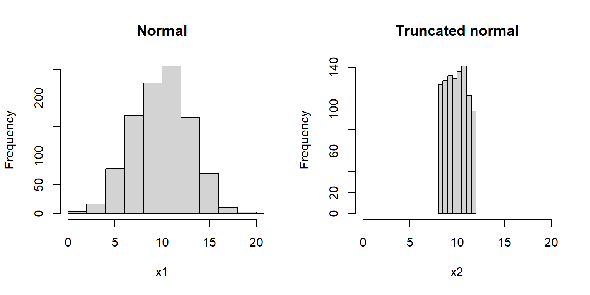
9.3.2 Normal distribution
The normal distribution is probably the most important distribution in statistics. Many natural processes result in normal distributions. Consequently, most classical statistical methods (e.g., t-tests, ANOVA, and linear models) assume that data come from a normal distribution. The normal distribution is also sometimes called the Gaussian distribution because of the work of mathematician Carl Friedrich Gauss, although he did not discover it.
The normal distribution is also sometimes called the bell curve because of the shape of its PDF. This term should be avoided because other probability distributions also have a bell shape, and because normal distributions are not always bell-shaped.
The normal distribution is parameterized by its mean, \(\mu\), and standard deviation, \(\sigma\). Some sources prefer the variance \(\sigma^2\) instead of the standard deviation, and some even use the precision \(1/\sigma^2\) or \(\sigma^{-2}\). This is fine because, as the symbols imply, the SD, variance, and precision are all related. Just pay attention to the notation being used. Using \(\sigma\) instead of \(\sigma^2\) or \(1/\sigma^2\) can be convenient because \(\sigma\) is in the same units as \(\mu\).
The figure below shows several normal distributions with different means and standard deviations.
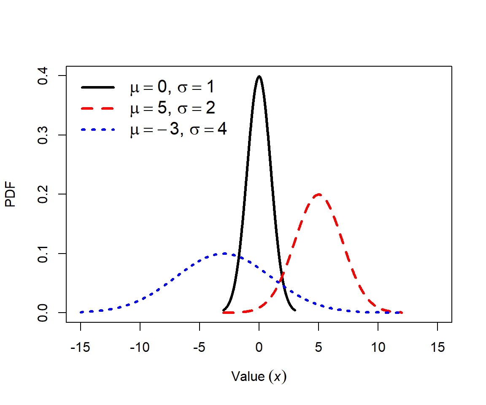
Many phenomena result in normal distributions because of the Central Limit Theorem (CLT). The CLT states that under certain conditions the sum of many random variables will approximate a normal distribution. The main condition is that the random variables will be independent and identically distributed (often abbreviated “i.i.d.”). In other words, the values do not depend on each other, but they all come from the same distribution. The exact distribution does not matter. The example below uses the uniform distribution. The CLT also works with the mean of the random variables instead of the sum, because mean is just the sum scaled by sample size.
# large sample size
N <- 1e4
# set up a vector to hold the sums of
# the random values
xvec <- numeric(N)
# in a loop, draw 10 random values and
# calculate their sum...10000 times
for(i in 1:N){xvec[i] <- sum(runif(10))}
# histogram of the 10000 sums
hist(xvec)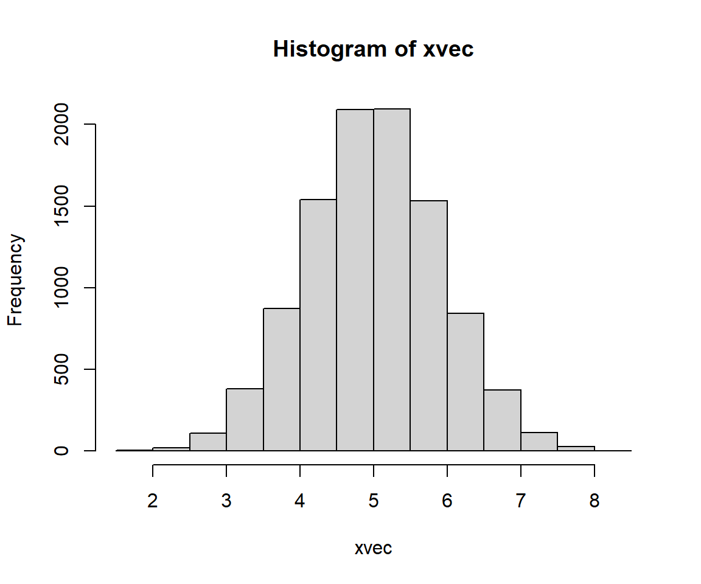
It should be noted that just because a sample size is large does not mean that it is normal. For example, the R commands below produce distributions x1 and x2 that are in no way normal.
The standard normal distribution has \(\mu=0\) and \(\sigma=1\). This is often written as \(N\left(0,1\right)\). These parameters are the defaults in the R functions that work with the normal distribution.
9.3.2.1 Normal distribution in R
The normal distribution is accessed using the _norm group of functions, where the space could be d, p, q, or r. These functions calculate or returns something different:
dnorm(): Calculates probability density function (PDF) at x.pnorm(): Calculates CDF, from \(-\infty\) up to x. Answers the question, “at what quantile of the distribution should some value fall?”. The reverse ofqnorm().qnorm(): Calculates the value at a specified quantile or quantiles. The reverse ofpnorm().rnorm(): Draws random numbers from the normal distribution.
The normal distribution in R is parameterized by the mean (argument mean) and the SD, not the variance (argument sd). The figure generated below shows the effect of increasing the SD on the shape of a distribution. Greater variance (i.e., greater SD) means that the distribution is more spread out.
mu <- 10
x <- seq(0, 20, by=0.1)
y1 <- dnorm(x, mu, 2)
y2 <- dnorm(x, mu, 5)
y3 <- dnorm(x, mu, 10)
par(mfrow=c(1,1))
plot(x, y1, type="l", lwd=3, xlab="X", ylab="PDF")
points(x, y2, type="l", lwd=3, col="red")
points(x, y3, type="l", lwd=3, col="blue")
legend("topright", legend=c(expression(sigma==2),
expression(sigma==5), expression(sigma==10)),
lwd=3, col=c("black", "red", "blue"))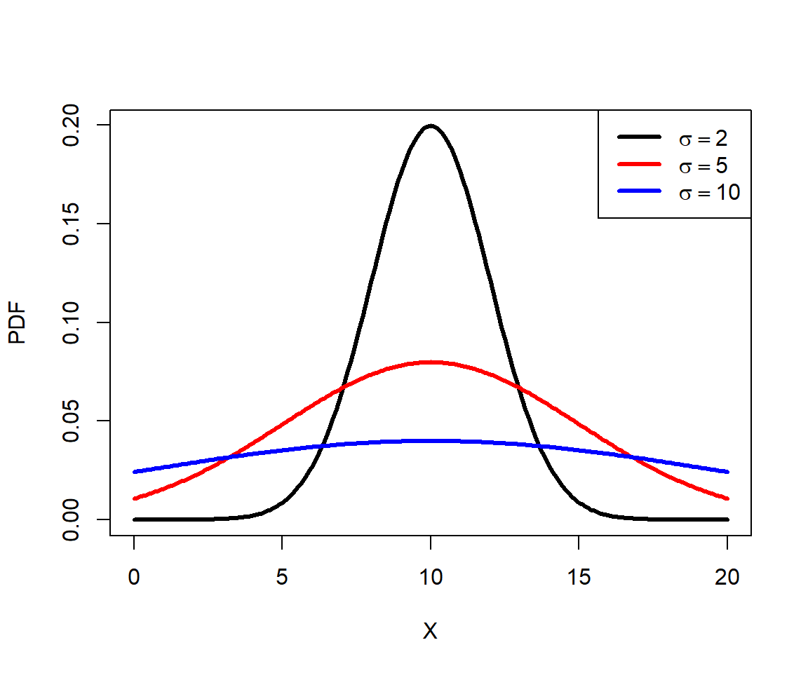
The normal distribution has several useful properties. Generally, the mean and median are the same (if the distribution is not skewed). Approximately 68% of values fall within 1 SD of the mean, 95% of values fall within about 2 SD of the mean (technically 1.9599 SD, or qnorm(0.975)), and 99% of values fall within about 3 SD of the mean. So, deviations of >3 SD are very rare and may signify outliers. The number of SD a value falls away from the mean is sometimes referred to as a z-score or a sigma. Z-scores are calculated as:
\[z\left(x\right)=\frac{x-\mu}{\sigma}\]
Where x is the value, \(\mu\) is the mean, and \(\sigma\) is the SD.
Z-scores are sometimes used when comparing variables that are normally distributed, but on very different scales. Converting the raw values to their z-scores is referred to as standardizing them. Any variable, once standardized, has a mean of 0 and SD of 1. The units of a z-scaled variable are “standard deviations away from the mean”.
Standardized values are sometimes used in regression analyses in place of raw values. Many ordination methods such as principal components analysis (PCA) standardize variables automatically. Z-scores (or standardized values) are calculated in R using the scale() function:
x1 <- rnorm(100, 100, 40)
par(mfrow=c(1,2))
hist(x1)
hist(scale(x1))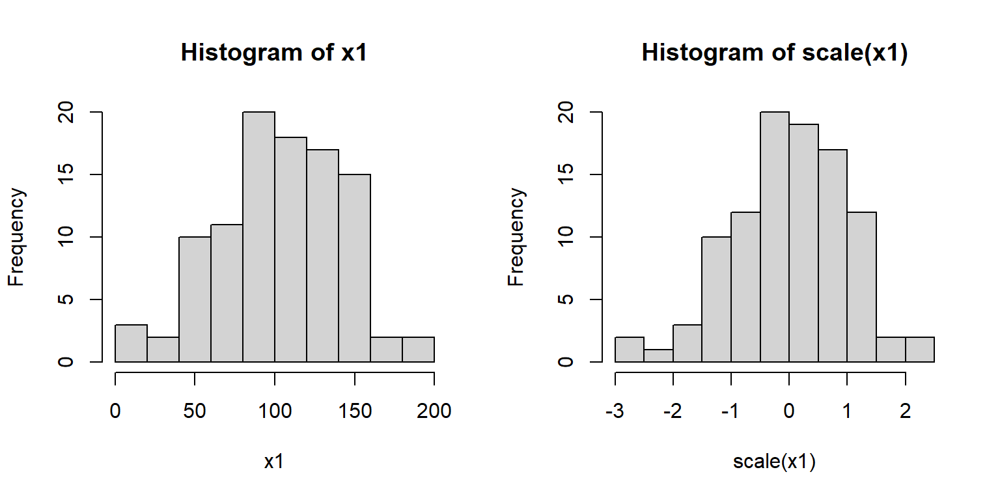
Because standardized variables all have the same mean and SD, standardizing a set of variables has the effect of putting all of the variables on equal footing. Without standardizing,
9.3.3 Lognormal distribution
The lognormal distribution (a.k.a.: log-normal) is, as the name implies, a distribution that is normal on a logarithmic scale. If a variable \(X\) is normally distributed and we exponentiate it, the result \(Z=e^X\) will be lognormally distributed. Conversely, if variable \(Z\) is lognormally distributed, then \(\log\left(Z\right)\) will be normally distributed. By convention the natural log \(\ln\), or \(\log_e\), is used to define the lognormal distribution. R’s lognormal distribution functions use the natural log scale.
The lognormal distribution arises naturally from multiplicative processes. Remember that logarithms relate the operations of multiplication and addition:
\[\log\left(ab\right)=\log\left(a\right)+\log\left(a\right)\]
Suppose some quantity \(z\) is determined by multiplying together many positive numbers:
\[z=X_1X_2X_3\cdots X_n\]
Taking its logarithm gives:
\[\log(Z)=\log(X_1)+\log(X_2)+\log(X_3)+\cdots+\log(X_n)\]
This connects the lognormal distribution to the Central Limit Theorem (Section 9.3.2). The ordinary CLT tells us that the sum of many independent random contributions tends toward a normal distribution under fairly general conditions. If a biological quantity instead results from the product of many independent positive contributions, then taking its logarithm converts that product into a sum. Consequently, the logarithm of the resulting quantity can approach a normal distribution, meaning that the original quantity approaches a lognormal distribution.
where quantities are multiplied together rather than added. For example, growth of organisms or population sizes. As an individual organism grows, new body tissues are produced by cell division (mitosis), and the absolute rate of mitosis is proportional to the number of cells already present.
This is relevant to many biological processes in which changes are proportional rather than additive. For example, imagine an organism whose size changes during each time interval by a somewhat random growth multiplier. Its final size can be written as
\[S=S_0G_1G_2\cdots G_n\]
where each \(G_i\) is a growth multiplier applied to the starting size \(S_0\). Small random differences in growth therefore accumulate multiplicatively, potentially producing a lognormal distribution of final sizes3.
We can demonstrate the same idea with a simulation. Suppose we repeatedly draw 10 random positive values and multiply them together:
# big sample size (10000)
N <- 1e4
# set up vector for 10000 values
xvec <- numeric(N)
# in a loop, draw 10 random values in [1,2]
# and multiply them all together...10000 times
for(i in 1:N){xvec[i] <- prod(runif(10, 1, 2))}
# plot a histogram of the products,
# and histogram of the log of the products
par(mfrow=c(1,2))
hist(xvec, xlab="Product", main="Original scale")
hist(log(xvec), xlab="Log(Product)", main="Log scale")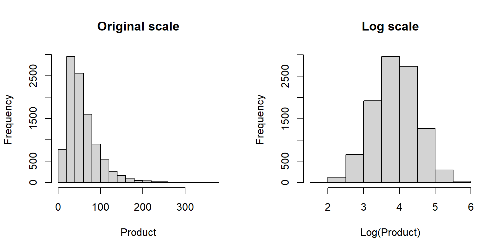
The products in xvec are strongly right skewed on their original scale, but their logarithms are approximately normally distributed. This happens because
\[\sum_{i=1}^{10}\log(X_i)=\prod_{i=1}^{10}X_i\]
turning the multiplicative process into an additive one.
More generally, lognormal distributions are useful for describing positive, right-skewed variables in which most observations are relatively small but a few observations are much larger. Such patterns are common in biological measurements including organism sizes, abundances, concentrations, and other quantities influenced by proportional or multiplicative processes. Other positive, right-skewed distributions, particularly the gamma distribution (Section 9.3.4), can produce superficially similar shapes, so the shape of a histogram alone does not establish that a process is lognormal.
The lognormal distribution is parameterized by the mean and standard deviation of the variable after taking its logarithm. In R these parameters are named meanlog and sdlog. Thus, they are not the mean and standard deviation of the lognormally distributed variable on its original scale. Forgetting which quantities are on the log scale is an easy way to produce confusing results, especially when calculating expected values or graphing distributions.
The figure below shows various lognormal distributions with \(\mu\) = 3 and different SD on a logarithmic scale (left) and a linear scale.
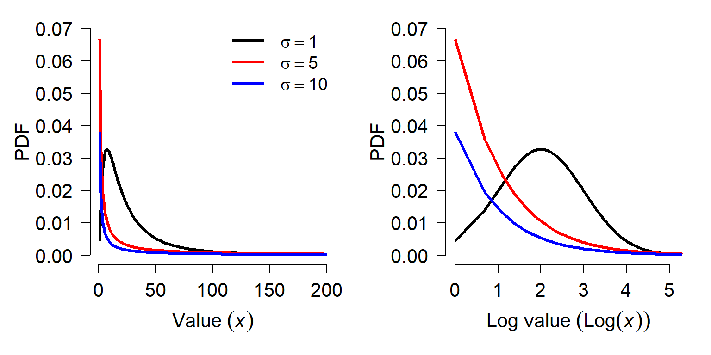
The figures show the effect that variance can have on the lognormal distribution. When the variance on the log scale is \(<\mu\), the distribution is approximately normal on the log scale. As the variance gets larger, the distribution gets more and more right-skewed. Right-skewed means that the values are more and more concentrated near 0, and there are fewer very large values.
Interestingly, the mean of a log-normal distribution is not simply \(e^\mu\) as one might expect. The mean of a lognormal distribution X on the linear scale is
\[mean\left(X\right)=e^{\left(\frac{\mu+\sigma^2}{2}\right)}\]
In this equation, \(\mu\) and \(\sigma\) are the mean and SD on the logarithmic scale, or logmean and logsigma in R terms. The variance on the linear scale is:
\[Var\left(X\right)=e^{2\mu+\sigma^2}\left(e^{\sigma^2}-1\right)\]
What this means is that you cannot transform the parameters of a lognormal distribution from the logarithmic to the linear scale by simply exponentiating or taking logarithms of parameters.
9.3.3.1 Lognormal distribution in R
The lognormal distribution is accessed using the _lnorm group of functions, where the space could be d, p, q, or r. These functions calculate or returns something different:
dlnorm(): Calculates probability density function (PDF) at x.plnorm(): Calculates CDF, from 0 up to x. Answers the question, “at what quantile of the distribution should some value fall?”. The reverse ofqlnorm().qlnorm(): Calculates the value at a specified quantile or quantiles. The reverse ofplnorm().rlnorm(): Draws random numbers from the lognormal distribution.
When working with the lognormal distribution in R it is important to keep in mind that the parameters (meanlog and sdlog) of the _lnorm functions are on the natural log scale. The meanlog parameter is the mean of the logarithm of the values, not the mean of the values or the logarithm of the mean of the values. Similarly, sdlog is the SD of the logarithm of the values, not the SD of the values or the logarithm of the SD of the values. The example below shows this:
# draw some values
x1 <- rlnorm(1e4, 2, 1)
# mean of the values
mean(x1)[1] 12.16433# mean of the log(values)
mean(log(x1))[1] 1.997859# not the log of the mean of the values
log(mean(x1))[1] 2.498508# sd of the values
sd(x1)[1] 16.08477# sd of the log(values)
sd(log(x1))[1] 0.9971798# exp(meanlog) != mean(x1)
c(exp(2),
mean(x1))[1] 7.389056 12.1643349.3.4 Gamma distribution
The gamma distribution describes waiting times until a certain number of events takes place. This means it is the continuous analogue of the negative binomial distribution, which describes the number of trials until some certain number of successes. The gamma distribution can also be used empirically to describe positive data whose SD is much larger than the mean. This makes it an alternative to the lognormal distribution for right-skewed data, much like the negative binomial is an alternative to the Poisson. Example gamma distributions are shown below.

The Gamma distribution is parameterized by its shape and scale.
- The shape parameter \(k\) describes the number of events
- The scale parameter \(\theta\) (“theta”) describes the mean time until each event.
- The scale is sometimes expressed as its reciprocal, the rate.
In R, the gamma can be parameterized by either the shape and scale, or shape and rate. This means you need to name your arguments when working with the gamma distribution.
For example, \(\Gamma(k=4,\theta=2)\) is the distribution of length of time in days it would take to observe 4 events if events occur on average once every two days. Equivalently, it is the time to observe 4 events if events occur at a rate of 1/2 event per day. Consequently, the mean of a gamma distribution given shape \(k\) and scale \(\theta\) (or rate \(r\)) is:
\[\mu=k\theta=\frac{k}{r}\]
The variance is calculated as:
\[\sigma^2=k\theta^2=\frac{k}{r^2}\]
Like the negative binomial, the gamma distribution is often used phenomenologically; that is, used to describe a variable even if its mechanistic description (waiting times) doesn’t make sense biologically. Just as the negative binomial can be used to model count data with variance greater than the mean (i.e., an overdispersed Poisson), a gamma distribution can be used for positive data with \(\sigma\gg\mu\). I.e., the gamma can be used in many of the same cases as the lognormal, although the lognormal may have a clearer biological interpretation.
9.3.4.1 Gamma distribution in R
The gamma distribution is accessed using the _gamma group of functions, where the space could be d, p, q, or r. These functions calculate or returns something different:
dgamma(): Calculates probability density function (PDF) at x.pgamma(): Calculates CDF, from 0 up to x. Answers the question, “at what quantile of the distribution should some value fall?”. The reverse ofqgamma().qgamma(): Calculates the value at a specified quantile or quantiles. The reverse ofpgamma().rgamma(): Draws random numbers from the gamma distribution.
Note that when working with the gamma distribution in R, you must supply either the shape and the rate, or the shape and the scale. Supplying scale and rate will return an error.
# will work:
rgamma(10, shape=3, scale=2)
rgamma(10, shape=3, rate=0.5)
# will return error:
rgamma(10, scale=2, rate=0.5)9.3.5 Beta distribution
The beta distribution is defined on the interval \([0,1]\) and is parameterized by two positive shape parameters, \(\alpha\) and \(\beta\). For this reason, the beta distribution is often used to model the distribution of probabilities. The beta distribution is probably the most commonly used distribution for variables constrained to lie between 0 and 1, such as probabilities, proportions, and fractions.
The beta distribution is closely related to the binomial distribution. One way to think about the two shape parameters is as summaries of a binomial trial. Parameter \(\alpha\) behaves like the number of successes plus one, while \(\beta\) behaves like the number of failures plus one. This interpretation provides useful intuition for the shape of the distribution: increasing \(\alpha\) shifts probability toward 1, while increasing \(\beta\) shifts probability toward 0. However, \(\alpha\) and \(\beta\) are simply shape parameters and do not have to be integers; but, they do have to be positive.
An even simpler explanation is that the balance of \(\alpha\) and \(\beta\) determine where most of the probability lies. Increasing \(\alpha\) places more probability near 1, whereas increasing \(\beta\) places more probability near 0. Increasing both will crowd the distribution near 0.5. Decreasing both will push the probability out towards 0 and 1 and away from 0.5.
The figure below shows various beta distributions. Notice how probability is shifted toward the center when \(\alpha\) and \(\beta\) both increase, and how the distribution becomes U-shaped when they both decrease.
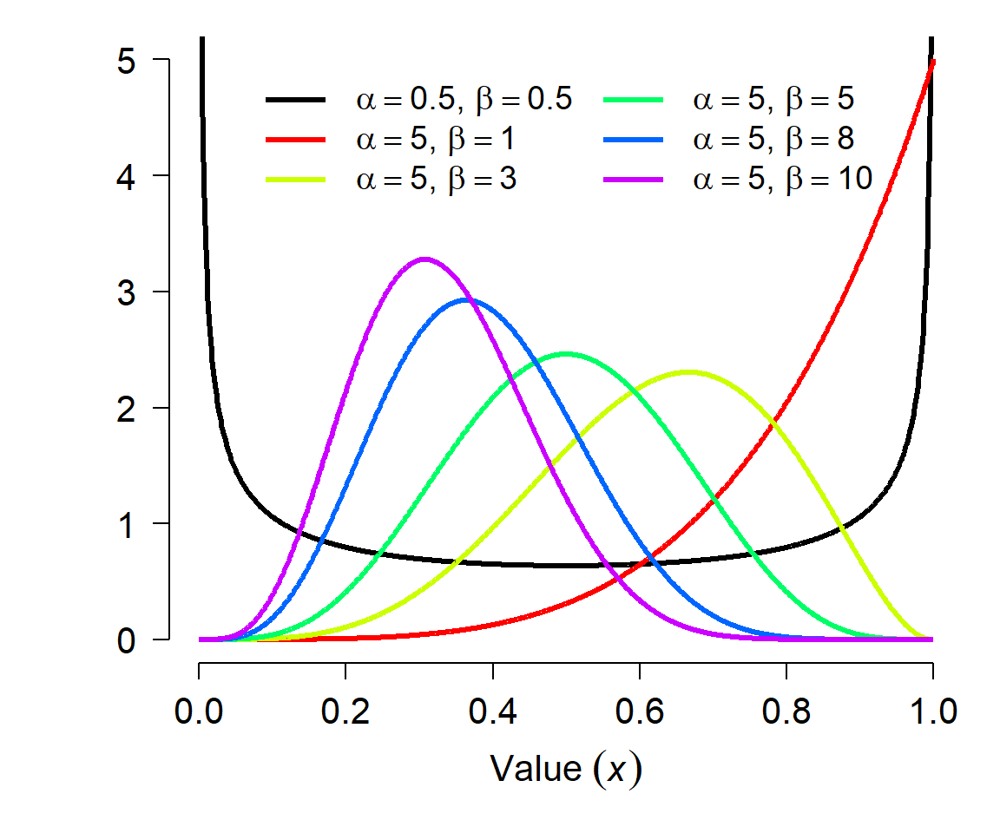
The beta distribution has mean
\[\mu=\frac{\alpha}{\alpha+\beta}\]
and variance
\[\sigma^2=\frac{\alpha\beta}{\left(\alpha+\beta\right)^2\left(\alpha+\beta+1\right)}\]
These expressions can be re-arranged to solve for \(\alpha\) and \(\beta\) given a mean and variance:
\[\alpha=\left(\frac{1-\mu}{\sigma^2}-\frac{1}{\mu}\right)\mu^2\]
\[\beta=\alpha\left(\frac{1}{\mu}-1\right)\]
This is useful if you want to use proportions or percentages that were reported as a mean and variance (or SD, or SE). For example, if a paper reports a survival rate estimate as \(0.25\pm0.18\) SE, it’s tempting to misinterpret that as meaning that the survival rate is a normally-distributed variable. However, treating the survival rate as normally distributed would imply that about 8% of the time, the survival rate was negative!
pnorm(0, 0.25, 0.18)[1] 0.08243327So, you should convert these estimates to a beta distribution if you want to understand how they might vary:
\[\alpha=\left(\frac{1-0.25}{\left(0.18\right)^2}-\frac{1}{0.25}\right){0.25}^2\approx1.1968\]
\[\beta=1.1968\left(\frac{1}{0.25}-1\right)\approx3.5903\]
The figure below shows the two distributions, the normal in black and the beta in blue. The dashed vertical line at 0 shows that part of the normal distribution implied by the mean and SE of a survival “probability” is not possible. Converting to a beta distribution preserves the mean and variance while ensuring that all values fall between 0 and 1. This more accurately reflects the true nature of the uncertainty about the probability.
Note that this conversion cannot be done for some combinations of \(\mu\) and \(\sigma\): both \(\alpha\) and \(\beta\) must both be positive, so if you calculate a non-positive value for either parameter then the conversion won’t work. These formulas also require that
\[\sigma^2<\mu\left(1-\mu\right)\]
This can sometimes happen for probabilities very close to 0 or 1 with large variances.
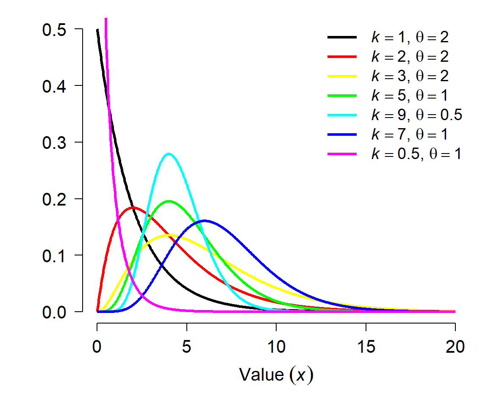
9.3.5.1 Beta distribution in R
The beta distribution is accessed using the _beta group of functions, where the space could be d, p, q, or r. These functions calculate or returns something different:
dbeta(): Calculates probability density function (PDF) at x.pbeta(): Calculates CDF, from 0 up to x. Answers the question, “at what quantile of the distribution should some value fall?”. The reverse ofqbeta().qbeta(): Calculates the value at a specified quantile or quantiles. The reverse ofpbeta().rbeta(): Draws random numbers from the beta distribution.
9.3.5.2 The beta and the binomial
The relationship between the beta and binomial distributions is especially useful for making inferences about probabilities. The binomial distribution describes the number of successes we observe when the probability of success \(p\) is fixed. The beta distribution can instead be used to describe our uncertainty about the value of \(p\) itself.
We can take advantage of the relationship between the binomial and beta distributions to make inferences from count data. Imagine a study where biologists track the probability that fruit flies die before they are 3 weeks old. They report that 30 out of 130 flies die on or before day 21 of life. What can we estimate about the underlying distribution of 3-week survival rates?
One common starting point is to treat all survival probabilities between 0 and 1 as equally plausible before seeing the data. This corresponds to \(\alpha=\beta=1\). We then add the observed successes to \(\alpha\) and failures to \(\beta\).
Then we can model uncertainty either in the survival probability or mortality probability, depending on how we frame successes or failures. If survival is a success, then
\[p_{survival}\sim{Beta\left(\alpha=101,\beta=31\right)}\]
Alternatively, we can model mortality rate using mortality as a success:
\[p_{mortality}\sim{Beta\left(\alpha=31,\beta=101\right)}\]
The mean survival rate is:
Alpha <- 101
Beta <- 31
# mean estimated survival probability
Alpha / (Alpha + Beta)[1] 0.7651515# middle 95% of distribution
qbeta(c(0.025, 0.975), Alpha, Beta)[1] 0.6894960 0.8332005This tells us that, given our experimental observation of 100 survivors out of 130 flies, that the true underlying survival rate is about 0.765 and is probably in the interval \(\left[0.689,0.833\right]\). We can see that visually below:
# domain of probability
x <- seq(0, 1, length=1e3)
# survival rate distribution
y.surv <- dbeta(x, shape1=101, shape2=31)
par(mfrow=c(1,1), mar=c(5.1, 5.1, 1.1, 1.1),
bty="n", lend=1, las=1,
cex.axis=1.3, cex.lab=1.3)
plot(x, y.surv, type="l", lwd=3,
xlab="P(survival)", ylab="PDF")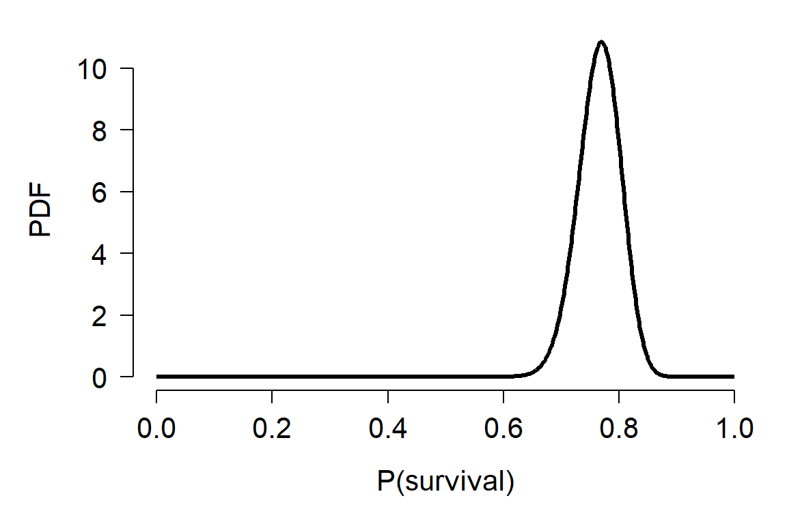
9.3.6 Exponential distribution
The exponential distribution describes the distribution of waiting times until a single event occurs, given a constant rate per unit time of that event occurring. This makes it the continuous analog of the geometric distribution. The exponential distribution is also a special case of the gamma distribution where shape parameter \(k=1\).
The exponential distribution should not be confused with the exponential family of distributions, although the exponential distribution is a member of that family. The exponential family of distributions is a broad class that includes the normal, exponential, gamma, beta, Poisson, and many others.
The exponential distribution is parameterized by a single rate parameter, \(\lambda\), which describes the expected event rate per unit time. For example, \(\lambda=2\) per day means an average waiting time of \(1/0.2=5\) days. It does not mean exactly 0.2 events occur every day–this is a long run average. This property means that \(\lambda\) must be strictly positive. This is exactly the same as the rate parameter r sometimes used to describe the gamma distribution. The mean of an exponential distribution X is:
\[\mu\left(X\right)=\frac{1}{\lambda}\]
and the variance is:
\[\sigma^2\left(X\right)=\frac{1}{\lambda^2}\]
Interestingly, this implies that the standard deviation \(\sigma\) is the same as the mean \(\mu\). Contrast this with the Poisson distribution, where the variance \(\sigma^2\) is the same as the mean. Thus, the CV of the exponential distribution is always 1.
The exponential distribution is supported for all non-negative real numbers; i.e., the half-open interval [0, \(+\infty\)). Like the gamma distribution, the exponential distribution can be used when its mechanistic assumptions make sense, such as waiting times or lifespans with a constant event rate. It also produces strongly right-skewed values, with many small and few large values, but right skew alone is not sufficient reason to assume an exponential distribution.
One other important property of the exponential distribution is that it is memoryless. If the event rate is constant, then the probability of waiting an additional amount of time does not depend on how long you have already waited. For example, if mortality follows an exponential distribution with a constant hazard, an individual that has already survived 5 years has the same expected remaining lifespan as a newly observed individual. The memoryless property is related to why the gambler’s fallacy is a fallacy. If independent events occur with constant probability or rate, a long period without an event does not make that event “due.” The geometric distribution has this property in discrete time, and the exponential distribution has the analogous property in continuous time.
9.3.6.1 Exponential distribution in R
The exponential distribution is accessed using the _exp group of functions, where the space could be d, p, q, or r. These functions calculate or returns something different:
dexp(): Calculates probability density function (PDF) at \(x\).pexp(): Calculates the cumulative probability \(P\left(X\leq{x}\right)\). I.e., it tell you what proportion of the distribution lies at or below a specified value. The reverse ofqexp().qexp(): Calculates the value at a specified quantile or quantiles. The reverse ofpexp().rexp(): Draws random numbers from the exponential distribution.
9.3.7 Triangular distribution
The triangular distribution is sometimes used as a simple “lack of knowledge” distribution when little information is available beyond a plausible minimum, maximum, and most likely value. It is used more often to represent uncertainty in simulations and risk models than to model observed biological data directly.
Sometimes we need to model a process about which we have very little information. For example, we may want to simulate population dynamics without knowing a key survival rate, or organismal growth without knowing a key growth constant. In these situations we might have only a vague idea of how a parameter or an outcome are distributed. At a minimum, we can usually infer or estimate the range and central tendency of a variable. Those are enough to estimate a triangular distribution.
The triangular distribution has three parameters: the lower limit \(a\), the upper limit \(b\), and the mode (most common value) \(c\). Any triangular distribution must satisfy \(a<b\) and \(a\le{c}\le{b}\).
The mean of a triangular distribution X is the mean of its parameters:
\[\mu\left(X\right)=\frac{a+b+c}{3}\]
and the variance is
\[\sigma^2\left(X\right)=\frac{a^2+b^2+c^2-ab-ac-bc}{18}\]
In addition to serving as a stand-in distribution when data are scarce, the triangular distribution can arise in several natural situations. For example, the mean of two standard uniform variables follows a triangular distribution (see below).
9.3.7.1 Triangular distribution in R
The triangular distribution is available in the add-on package extraDistr (Wolodzko 2026). The triangular distribution is accessed using the _triang group of functions, where the space could be d, p, q, or r. These functions calculate or returns something different:
dtriang(): Calculates probability density function (PDF) at \(x\).ptriang(): Calculates \(P\left(X\le{x}\right)\), the CDF from \(a\) to \(x\). The reverse ofqtriang().qtriang(): Calculates the value at a specified quantile or quantiles. The reverse ofptriang().rtriang(): Draws random numbers from the triangular distribution.
The code below shows the PDFs of various triangular distributions. Notice that c is not used as a variable name, to avoid potentially masking the very critical R function c.
library(extraDistr)
ax <- c(1,1,3)
bx <- c(5, 10, 7)
cx <- c(3, 3, 6)
x1 <- seq(ax[1], bx[1], length=50)
x2 <- seq(ax[2], bx[2], length=50)
x3 <- seq(ax[3], bx[3], length=50)
y1 <- dtriang(x1, ax[1], bx[1], cx[1])
y2 <- dtriang(x2, ax[2], bx[2], cx[2])
y3 <- dtriang(x3, ax[3], bx[3], cx[3])
plot(x1, y1, type="l", lwd=3, xlab="X", ylab="PDF",
xlim=c(0, 10))
points(x2, y2, type="l", lwd=3, col="red")
points(x3, y3, type="l", lwd=3, col="blue")
legend("topright", legend=c("Tri(1, 5, 3)", "Tri(1, 10, 3)", "Tri(3, 7, 6)"),
lwd=3, col=c("black", "red", "blue"))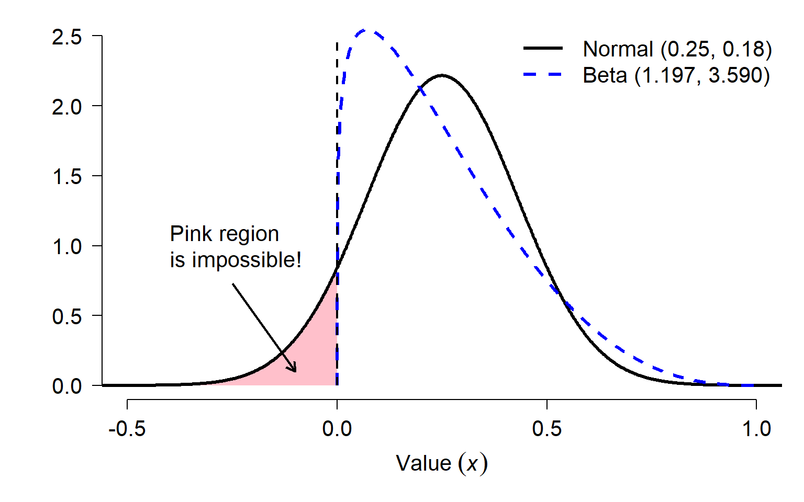
The code below demonstrates how a triangular distribution can arise as the distribution of means of two standard uniform variables x1 and x2. The command density() calculates the kernel density estimate of a vector. This kernel density estimate is an empirical estimate of the PDF of a variable.
# random number seed for reproducibility
set.seed(42)
# sample size
n <- 10^(2:4)
# set up lists to hold simulation results
x1 <- vector("list", length(n))
y <- vector("list", length(n))
x <- vector("list", length(n))
# simulate uniforms in a for loop
for(i in 1:length(n)){
x[[i]] <- (runif(n[i]) + runif(n[i]))/2
}
# calculate the empirical density function
for(i in 1:length(n)){
z <- density(x[[i]])
x1[[i]] <- z$x
y[[i]] <- z$y
}
# make the graph
cols <- rainbow(3)
plot(x1[[1]], y[[1]], type="l", lwd=3, col=cols[1],
xlab="X", ylab="Kernel density estimate", ylim=c(0, 2))
for(i in 2:3){
points(x1[[i]], y[[i]], type="l", lwd=3, col=cols[i])
}
legend("topleft", legend=c("n=100", "n=1000", "n=10000", "triangular"),
bty="n", lwd=3, col=c(cols[1:3],"black"), lty=c(1,1,1,2))
# add the triangular distribution
curve(dtriang(x, 0, 1, 0.5), from=0, to=1, add=TRUE, lwd=3, lty=2)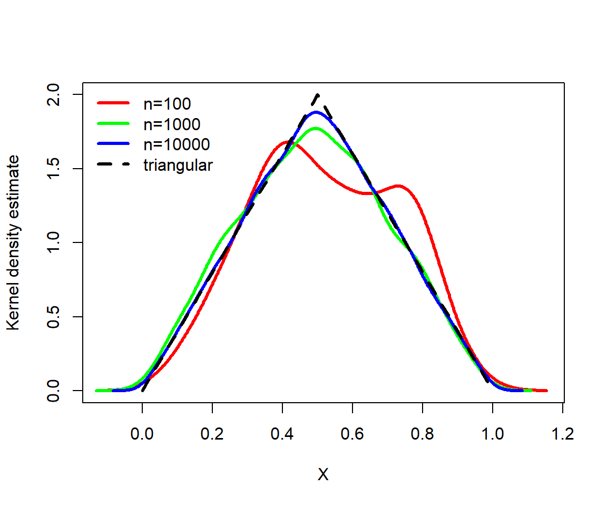
9.3.8 Distribution summary
The table below summarizes some the key features of the discrete distributions we explored in this module.
| Distribution | Support | What it models |
|---|---|---|
| Bernoulli | \(x\in\{0,1\}\) | Outcome of a single binary trial |
| Binomial | \(x\in\{0,1,\ldots,n\}\) | Number of successes in \(n\) independent trials with constant probability \(p\) |
| Poisson | \(x\in\{0,1,2,\ldots\}\) | Number of events occurring independently at a constant rate |
| Negative binomial | \(x\in\{0,1,2,\ldots\}\) | Number of failures before a specified number of successes; commonly used for overdispersed count data |
| Geometric | \(x\in\{0,1,2,\ldots\}\) | Number of failures before the first success, with constant probability \(p\) |
| Beta-binomial | \(x\in\{0,1,\ldots,n\}\) | Number of successes in \(n\) trials when the probability \(p\) varies |
| Multinomial | \(x_i\in\{0,1,\ldots,n\}\), with \(\sum_i x_i=n\) | Counts among \(k\) categories from \(n\) trials |
The table below summarizes some the key features of the continuous distributions we explored in this module.
| Distribution | Support | What it models |
|---|---|---|
| Uniform | \(x\in[a,b]\) | Continuous variables where all values within a bounded interval are equally likely |
| Normal | \(x\in(-\infty,+\infty)\) | Continuous variables arising from many additive processes; symmetric data concentrated around a mean |
| Lognormal | \(x\in(0,+\infty)\) | Positive variables that are normally distributed on a log scale; often arise from multiplicative processes |
| Gamma | \(x\in(0,+\infty)\) | Positive, right-skewed variables; waiting times until a specified number of events occurring at a constant rate |
| Beta | \(x\in[0,1]\) | Continuous proportions and probabilities, including uncertainty about the probability of a binary event |
| Exponential | \(x\in[0,+\infty)\) | Waiting times until the first event when events occur at a constant rate |
| Triangular | \(x\in[a,b]\) | Bounded continuous variables when only the minimum, maximum, and most likely value are known |
9.4 Fitting and testing distributions
Deciding what probability distribution to use to analyze your data is an important step in biological data analysis. The next step is to see how well your data actually match a distribution. This section demonstrates ways to compare data to probability distributions. We will also explore some methods to explicitly test whether or not a set of values came from a particular distribution.
9.4.1 Estimating distributional parameters
The function fitdistr() in package MASS estimates the parameters of a distribution most likely to produce random variables supplied as input. Simply put, if you have a variable x and want to know what parameters of some distribution are most likely to produce x, then fitdistr() will estimate this for you.
library(MASS)
set.seed(123)
n <- 50
# estimate parameters of a normal
x1 <- rnorm(n, 12, 2)
fitdistr(x1, "normal") mean sd
12.0688071 1.8331290
( 0.2592436) ( 0.1833129)# estimate parameters of a poisson
x2 <- rpois(n, 8)
fitdistr(x2, "Poisson") lambda
8.2200000
(0.4054627)# estimate parameters of a geometric
x3 <- rgeom(n, 0.7)
fitdistr(x3, "geometric") prob
0.90909091
(0.03876377)# estimate parameters of a beta
# unlike most distributions, need to
# supply starting values
x4 <- rbeta(n, 2, 0.5)
fitdistr(x4, "beta", start=list(shape1=1, shape2=1)) shape1 shape2
2.1520168 0.5070293
(0.4828815) (0.0844015)# estimate parameters of a negative binomial
x5 <- rnbinom(n, 4, 0.2)
fitdistr(x5, "negative binomial") size mu
3.674590 15.660000
( 0.907684) ( 1.283731)How did fitdistr() do? Most of the parameter estimates were pretty close to the true values. The estimates generally get closer as the sample size increases. Try increasing n to 500 and rerunning the code above.
9.4.2 Graphical methods for examining distributions
9.4.2.1 Comparing distributions with PDF or PMF plots
We can compare the distributions implied by the estimated parameters to the actual data using the quantile or distribution functions. The basic idea is to plot the data distribution, and superimpose the equivalent plots of the hypothetical distributions.
In the example below, we compare the probability mass function (PMF) of a discrete distribution (e.g., counts) to the PMFs of two possible distributions that might match the data. Note that the PMF of a discrete distribution can be estimated as the proportion of observations that take on each value.
set.seed(123)
# the counts:
x <- rnbinom(100, mu=4, size=2)
# fit parameters for poisson and negative binomial
f1 <- fitdistr(x, "Poisson")
f2 <- fitdistr(x, "negative binomial")
# calculate PMFs of candidate distributions across
# range of data
xx <- 0:max(x)
y1 <- dpois(xx, f1$estimate)
y2 <- dnbinom(xx, size=f2$estimate["size"],
mu=f2$estimate["mu"])
# empirical PMF of counts
y3 <- table(x)/length(x)
plot.x <- as.numeric(names(y3))
plot.y <- as.numeric(y3)
# make plot
par(mfrow=c(1,1), mar=c(5.1, 5.1, 1.1, 1.1),
las=1, lend=1,
cex.axis=1.2, cex.lab=1.2, bty="n")
plot(plot.x, plot.y, type="o",
pch=15, cex=1.3, ylim=c(0, 0.2),
ylab="PMF", xlab="X")
points(xx, y1, type="o", pch=16, cex=1.3, col="red")
points(xx, y2, type="o", pch=17, cex=1.3, col="blue")
legend("topright", legend=c("data", "Poisson", "negative binomial"),
pch=15:17, pt.cex=1.3,
col=c("black", "red", "blue"), bty="n")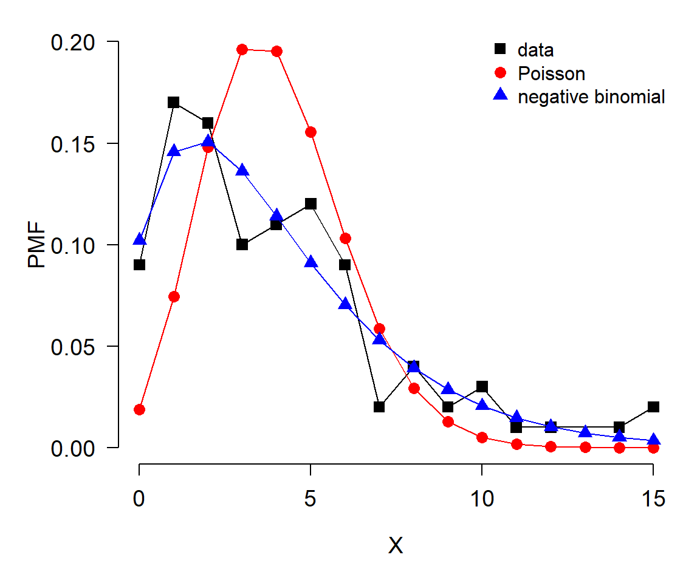
In this example, the data (black) seem to be better described by the negative binomial (blue) than by the Poisson (red).
The same idea can be applied to continuous distributions. The only difference is in how the probability density function (PDF) of the data is estimated (note PDF, not PMF). The PDF of a continuous distribution is estimated with function density(). It is a good idea to limit the estimation of density functions to the domain of the data. Keep in mind, however, that different distributions have different limits. If the data contain values outside the supported interval of the suspected distribution, that distribution cannot be correct.
The example below illustrates this: the data (x) are all positive, but one of the distributions tested (normal) will produce negative values using the estimated parameters (f1). That alone should lead the researcher in this situation to eliminate the normal as a possibility; the plot only confirms the unsuitability of the normal for modeling x.
set.seed(123)
# the data:
x <- rgamma(200, shape=2, scale=20)
hist(x)
# fit parameters for poisson and negative binomial
f1 <- fitdistr(x, "normal")
f2 <- fitdistr(x, "lognormal")
f3 <- fitdistr(x, "gamma")
# calculate PMFs of candidate distributions across
# range of data
xx <- seq(min(x), max(x), length=1000)
y1 <- dnorm(xx, f1$estimate[1], f1$estimate[2])
y2 <- dlnorm(xx, f2$estimate[1], f2$estimate[2])
y3 <- dgamma(xx, shape=f3$estimate[1], rate=f3$estimate[2])
# empirical PDF of data
dx <- density(x, from=min(x), to=max(x))
# make plot
par(mfrow=c(1,1), mar=c(5.1, 5.1, 1.1, 1.1),
las=1, lend=1,
cex.axis=1.2, cex.lab=1.2, bty="n")
plot(dx$x, dx$y,
type="l", lwd=3, ylim=c(0, 0.025),
ylab="", xlab="X")
title(ylab="PDF", line=4)
points(xx, y1, type="l", lwd=3, col="red")
points(xx, y2, type="l", lwd=3, col="blue")
points(xx, y3, type="l", lwd=3, col="green")
legend("topright",
legend=c("data", "normal", "lognormal", "gamma"),
lwd=3, col=c("black", "red", "blue", "green"),
cex=1.3, bty="n")
The plot suggests that the data are better described by a gamma distribution than by a normal or lognormal. This is because the curve for the data is most closely matched by the curve for the gamma. Try adjusting the sample size in the example above (e.g., n <- 50) and see if the correct distribution always matches the data.
9.4.2.2 Comparing distributions using CDF and ECDF
Another way to compare data to distributions is with the cumulative distribution function (CDF). The basic idea is the same as using density functions: compare the empirical CDF (ECDF) of the data to the CDFs potential distributions and judge which one best matches the data.
The example below shows how to use ECDF and CDF to compare a continuous distribution to various target distributions.
set.seed(123)
# make the data:
x <- rlnorm(100, meanlog=log(4), sdlog=log(3))
# fit some distributions
f1 <- fitdistr(x, "normal")
f2 <- fitdistr(x, "lognormal")
f3 <- fitdistr(x, "gamma")
f4 <- fitdistr(x, "exponential")
# calculate density functions over domain of x
xx <- seq(min(x), max(x), length=100)
y1 <- pnorm(xx, f1$estimate["mean"], f1$estimate["sd"])
y2 <- plnorm(xx, f2$estimate["meanlog"], f2$estimate["sdlog"])
y3 <- pgamma(xx,
shape=f3$estimate["shape"],
rate=f3$estimate["rate"])
y4 <- pexp(xx, rate=f4$estimate["rate"])
# ecdf of data
y5 <- ecdf(x)(xx)
# fancy plot
cols <- c("black", rainbow(4))
par(mfrow=c(1,1), mar=c(5.1, 5.1, 1.1, 1.1),
las=1, lend=1,
cex.axis=1.2, cex.lab=1.2, bty="n")
plot(xx, y5, type="l", lwd=3, xlab="X",
ylab="(E)CDF", ylim=c(0,1), col=cols[1])
points(xx, y1, type="l", lwd=3, col=cols[2])
points(xx, y2, type="l", lwd=3, col=cols[3])
points(xx, y3, type="l", lwd=3, col=cols[4])
points(xx, y4, type="l", lwd=3, col=cols[5])
legend("bottomright",
legend=c("ECDF(data)", "Normal", "Lognormal", "Gamma", "Exponential"),
lwd=3, col=cols, bty="n", cex=1.3)
In this example, the ECDF of the original data (black) appears to best match the lognormal (green)—as well it should, because the data came from a lognormal distribution. The normal (red) is clearly inappropriate because it diverges from the actual data over most of the range of the data. The gamma and exponential are each better than the normal, but not as close to the data as the lognormal.
9.4.2.3 Comparing distributions using QQ plots
Finally, you can use quantile-quantile (QQ) plots to compare data to different distributions that you suspect they may follow. The example below uses a QQ plot instead of ECDF as seen above.
set.seed(123)
# true distribution: lognormal
n <- 100
x <- rlnorm(n, meanlog=log(4), sdlog=log(3))
# estimate distributional parameters
f1 <- fitdistr(x, "normal")
f2 <- fitdistr(x, "lognormal")
f3 <- fitdistr(x, "gamma")
f4 <- fitdistr(x, "exponential")
# quantiles of reference distribution
qx <- ppoints(n)
# define functions to draw from each reference distribution
dfun1 <- function(p){qnorm(p, f1$estimate[1], f1$estimate[2])}
dfun2 <- function(p){qlnorm(p, f2$estimate[1], f2$estimate[2])}
dfun3 <- function(p){qgamma(p, shape=f3$estimate[1],
rate=f3$estimate[2])}
dfun4 <- function(p){qexp(p, f4$estimate)}
# get values at each reference quantile
qy1 <- dfun1(qx)
qy2 <- dfun2(qx)
qy3 <- dfun3(qx)
qy4 <- dfun4(qx)
# make plot
par(mfrow=c(2,2), mar=c(5.1, 5.1, 1.1, 1.1),
las=1, lend=1,
cex.axis=1.2, cex.lab=1.2, bty="n")
qqplot(qy1, x, main="Normal")
qqline(x, distribution=dfun1, col="red")
qqplot(qy2, x, main="Lognormal")
qqline(x, distribution=dfun2, col="red")
qqplot(qy3, x, main="Gamma")
qqline(x, distribution=dfun3, col="red")
qqplot(qy4, x, main="Exponential")
qqline(x, distribution=dfun4, col="red")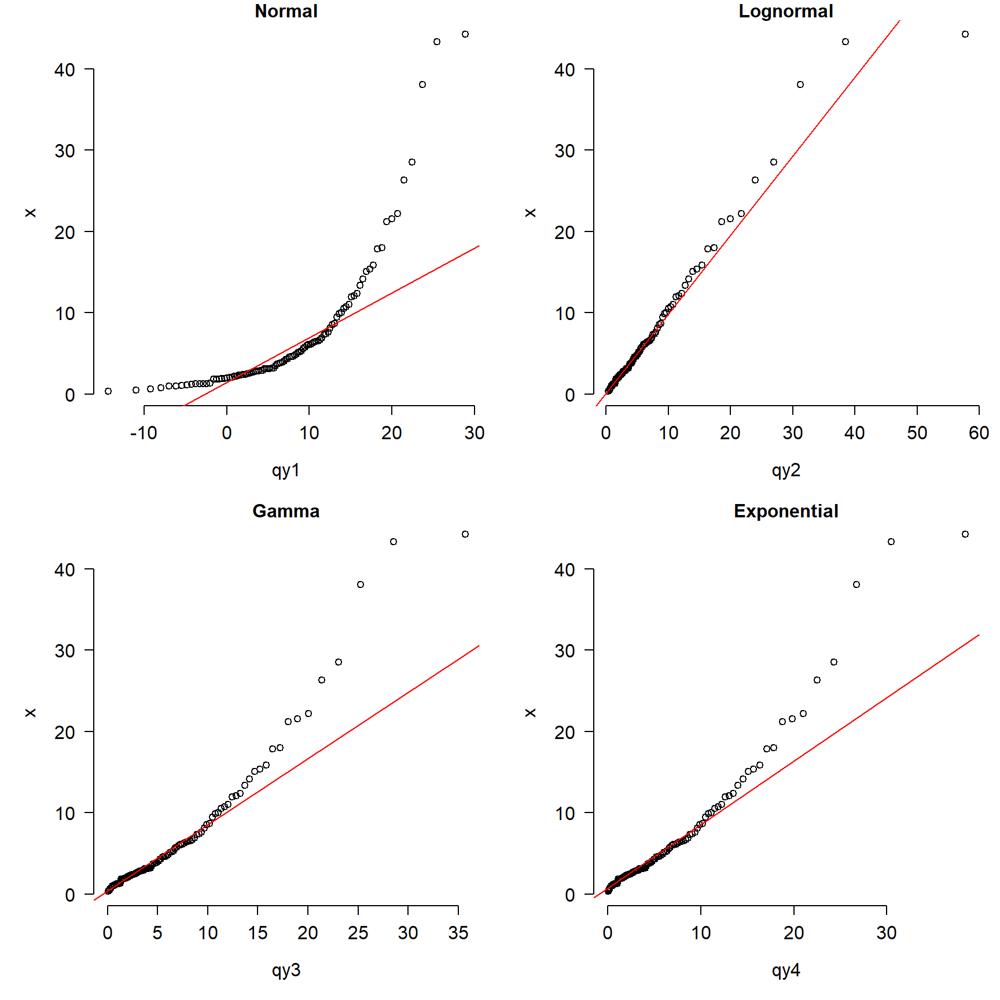
The figure shows that the normal is clearly inappropriate because the points do not fall on the line. The gamma and exponential are okay over most of the domain of x, but depart for large values. The lognormal plot (top right) shows the best match between the data and the reference distribution.
It is important to keep in mind that the comparisons we’ve made here are of idealized cases. Real data are often much messier and noisier than the distributions used in these examples. Sometimes real data are best characterized by mixture distributions for which there are no straightforward ways to estimate parameters. Still, the steps outlined above for estimating distributional parameters and comparing to idealized distributions are important first steps in data analysis.
9.4.3 Formal tests for distributions
9.4.3.1 Tests for normality
The normal distribution is so important for so many statistical methods that people have developed tests to formally determine whether data come from a normal distribution. The most common test for normality is the Shapiro-Wilk test. The Shapiro-Wilk test tests the null hypothesis that a sample x1, …, xn comes from a normally distributed population. The test statistic W is calculated as:
\[W=\frac{\left(\sum_{i=1}^{n}{a_ix_{(i)}}\right)^2}{\sum_{i=1}^{n}\left(x_i-\bar{x}\right)^2}\]
where \(\bar{x}\) is the sample mean, \(x_i\)~ is the \(i^{th}\) order statistic, and \(a_i\) is a coefficient related to expected values of i.i.d. normal variables. When the null hypothesis of a Shapiro-Wilk test is rejected, then there is evidence that the data are not normally distributed. The code below shows some examples of the Shapiro-Wilk test in R.
set.seed(123)
x1 <- rnorm(20)
shapiro.test(x1)
##
## Shapiro-Wilk normality test
##
## data: x1
## W = 0.96858, p-value = 0.7247x2 <- rpois(20, 10)
shapiro.test(x2)
Shapiro-Wilk normality test
data: x2
W = 0.90741, p-value = 0.0569x3 <- runif(20)
shapiro.test(x3)
Shapiro-Wilk normality test
data: x3
W = 0.9316, p-value = 0.1658x4 <- runif(100)
shapiro.test(x4)
Shapiro-Wilk normality test
data: x4
W = 0.96392, p-value = 0.007723Interestingly, the Shapiro-Wilk test turns out to be very powerful. That is, it can detect very small differences from the null hypothesis (i.e., normality) if the sample size is large enough. So, if you have data that you suspect are normal, but the Shapiro-Wilk test says otherwise, you need to visually inspect the data to determine how serious the departure from normality is.
9.4.3.2 Kolmogorov-Smirnov tests
The Kolmogorov-Smirnov (KS) test is a non-parametric test that compares a dataset to a distribution. Unlike the Shapiro-Wilk test, which only tests for normality, the KS test can compare data to any distribution. The KS test is useful because it is sensitive to differences in both location (i.e., mean) and shape. The example below illustrates the use of the KS test and plots the distributions.
n <- 1e2
x1 <- rnorm(n, 10, 2)
x2 <- rnorm(n, 10, 2)
x3 <- rnorm(n, 14, 2)
x4 <- rnorm(n, 14, 20)
x5 <- rpois(n, 14)
# run KS tests:
ks.test(x1, x2)
Asymptotic two-sample Kolmogorov-Smirnov test
data: x1 and x2
D = 0.1, p-value = 0.6994
alternative hypothesis: two-sidedks.test(x1, x3)
Asymptotic two-sample Kolmogorov-Smirnov test
data: x1 and x3
D = 0.66, p-value < 2.2e-16
alternative hypothesis: two-sidedks.test(x3, x4)
Asymptotic two-sample Kolmogorov-Smirnov test
data: x3 and x4
D = 0.41, p-value = 1.001e-07
alternative hypothesis: two-sidedks.test(x3, x5)
Asymptotic two-sample Kolmogorov-Smirnov test
data: x3 and x5
D = 0.25, p-value = 0.003861
alternative hypothesis: two-sided# make a plot
xx <- 5:25
y1 <- ecdf(x1)(xx)
y2 <- ecdf(x2)(xx)
y3 <- ecdf(x3)(xx)
y4 <- ecdf(x4)(xx)
y5 <- ecdf(x5)(xx)
cols <- rainbow(5)
par(mfrow=c(1,1), mar=c(5.1, 5.1, 1.1, 1.1),
bty="n", las=1, lend=1,
cex.axis=1.2, cex.lab=1.2)
plot(xx, y1, type="l", lwd=3,
xlab="X", ylab="ECDF", col=cols[1])
points(xx, y2, type="l", lwd=3, col=cols[2])
points(xx, y3, type="l", lwd=3, col=cols[3])
points(xx, y4, type="l", lwd=3, col=cols[4])
points(xx, y5, type="l", lwd=3, col=cols[5])
legend("bottomright",
legend=c("N(10,2)", "N(10,2)",
"N(14,2)", "N(14,20)", "Pois(14)"),
lwd=3, col=cols, bty="n", cex=1.3)
The KS test results show that distributions x1 and x2 are not different (\(p>0.05\)). This makes sense because they are both normal distributions with the same mean and SD. Distributions x1 and x3 are different because they have different means (10 vs. 14). Distributions x3 and x4 were different because they had different SD (2 vs. 20). Finally, distributions x3 and x5 were different because they were different distributions with different shapes (normal vs. Poisson).
The KS test can be useful when you want to see how well your data matches up with their theoretical distribution. Consider the example of a lognormally distributed response below. If we suspect that the data come from a lognormal distribution or a gamma distribution, we can use the function fitdistr() to estimate the parameters of a lognormal and a gamma distribution that are most likely to produce those data. Then, we use a KS test to compare the data to the idealized candidates.
# random number seed
set.seed(123)
# generate data
x1 <- rlnorm(100, 2, 2)
# estimate moments
fit1 <- fitdistr(x1, "lognormal")
fit2 <- fitdistr(x1, "gamma")Notice that the parameters from fitdistr() are supplied as arguments to ks.test(), following the name of the distribution we want to compare to. If parameters are not supplied, then R will perform the KS test using the default parameter values (e.g., meanlog=0 and sdlog=1 for plnorm(); none for pgamma()), which is not what we want.
ks.test(x1, "plnorm", fit1$estimate[1], fit1$estimate[2])
Asymptotic one-sample Kolmogorov-Smirnov test
data: x1
D = 0.058719, p-value = 0.8808
alternative hypothesis: two-sidedThe test shows that we cannot conclude that x1 is different from a lognormal distribution.
ks.test(x1, "pgamma", shape=fit2$estimate[1],
rate=fit2$estimate[2])
Asymptotic one-sample Kolmogorov-Smirnov test
data: x1
D = 0.16211, p-value = 0.01043
alternative hypothesis: two-sidedThe test shows that x1 is likely different from a gamma distribution.
# plot x1 and its theoretical distribution
xx <- seq(min(x1), max(x1), length=500)
y1 <- ecdf(x1)(xx)
y2 <- plnorm(xx, fit1$estimate[1], fit1$estimate[2])
y3 <- pgamma(xx, shape=fit2$estimate[1], rate=fit2$estimate[2])
par(mfrow=c(1,1), mar=c(5.1, 5.1, 1.1, 1.1), bty="n",
las=1, lend=1, cex.axis=1.2, cex.lab=1.2)
plot(log(xx), y1, type="l", lwd=3, xlab="log(X)", ylab="ECDF")
points(log(xx), y2, type="l", lwd=3, col="red")
points(log(xx), y3, type="l", lwd=3, col="blue")
legend("topleft",
legend=c("Data", "Lognormal", "Gamma"),
lwd=3,
col=c("black", "red", "blue"),
bty="n",
cex=1.3)
While neither the lognormal distribution nor the gamma distribution are awful at representing the data, the KS tests suggest that the simulated data x1 come from a lognormal distribution, not a gamma distribution. This is because the KS test was non-significant when comparing the data to the lognormal, and significant when comparing the data to the gamma distribution. The test comparing the data to the gamma distribution was, however, close to non-significant (\(p\approx0.01\)). See what happens if you change the random number seed and re-run the random generation and the test.
9.5 Data transformations
Data transformation is the proces of changing the values in your data according to a function. This is usually done to make the data better conform to the assumptions of a statistical test, or to make graphs easier to interpret. Transformation is done to make patterns easier to detect. In many fields transformations may be standard practice, and with good reason. Just make sure that you understand what the transform function is doing, and most importantly, why you are transforming your data.
9.5.1 Why transform?
Data transformation is the process of applying a function to your data to change their values. This is usually done so that the data better conform to the assumptions of a statistical test, or to make graphs of your data more interpretable. The functions that transform data are usually called “transforms”. There are many transforms out there, but only a few are very common in biology. All convert values on the original scale to values on the transformed scale. Variables often have different properties after a transformation, such as normality, or a different domain, or a different distribution shape. A function for transforming data must be both deterministic and invertible:
- Deterministic: the function always returns the same transformed value for a given input.
- Invertible: values on the transformed scale can be converted unambiguously to values on the original scale.
Data transformations are commonly used to make data fit certain distributions. For example, consider the figure below:
a <- rlnorm(1000, 1.5, 2)
par(mfrow=c(1,2))
hist(a, main="Values on original scale")
hist(log(a), main="Values on transformed scale")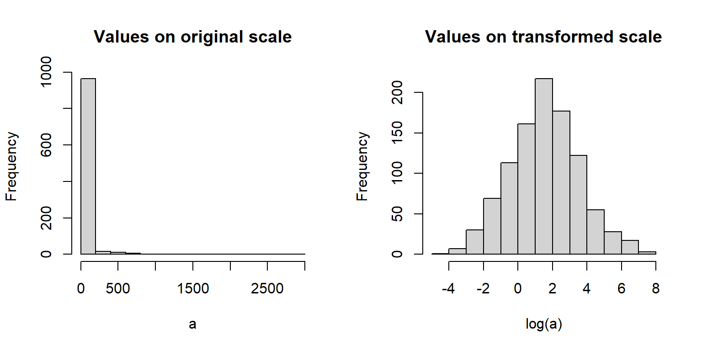
The left panel shows data with mostly small values and a strong positive skew. The right panel shows the same data on the log scale. Notice how the log-transformed values look much more like a normal distribution. This is very important for many statistical methods, which require normality in the residuals. The log-transformed plot also lets us see more details about the distribution that are obscured on the original scale.
9.5.2 Transforms vs. link functions
In generalized linear models (GLM) the response variable is modeled on a scale defined by a link function. That link function can look like a transform, and is often confused with a transform, but there is an important difference.
- A transform changes the observed response variables themselves: \(Y\rightarrow g\left(Y\right)\), and the model is fit to the transformed observations.
- A link function changes the scale on which the expected value of the response is modeled: \(g\left(E\left[Y\right]\right)=g\left(\mu\right)\).
For example, in a binomial GLM with a logit link,
\[logit\left(p\right)=X\beta\]
you are not literally taking the logit of observed proportions and fitting a linear regression to those transformed values. The observations remain binomial, and their variance follows a binomial distribution.
Thus, fitting lm(log(y) ~ x) actually transforms the observed values of y, whereas fitting glm(y ~ x, family=poisson(link="log")) does not take the logarithm of the observed values of y.
The figure below shows an example of this: the response variable on its original scale (left panel), a proportion, is analyzed on the logit scale (right panel). The deterministic part of the model (the relationship between the predictors and the response) is linear on the logit scale, while the stochastic part (the variance) still follows a binomial distribution on the original scale.
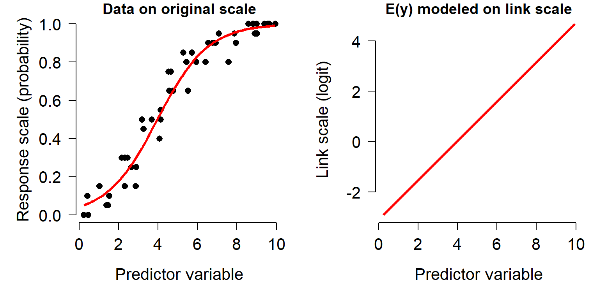
Let’s look at this in another context, because this distinction is important. A GLM link function is not a transformation of the response variable. When a response is transformed before fitting a linear model, the transformed values themselves are modeled, including their residual variation. In a GLM, the response retains its specified probability distribution on its original scale; the link function instead relates the expected value of that distribution to the linear predictor. The equations below illustrate the difference using two models that both involve a logarithm.
Linear model (LM) with transformation
In a linear model on transformed data, both the deterministic part of the model (\(\eta_i = X\beta\)) and the variance (\(\sigma^2_{residual}\)) are on the transformed scale.
\[y_i = e^{\eta_i}\]
\[\eta_i = X\beta+\varepsilon_i\]
\[\varepsilon_i\sim{Normal}\left(0,\sigma^2_{residual}\right)\]
Generalized linear model (GLM) with link function
In a GLM with a link function, the deterministic part of the model (\(\eta_i = X\beta\)), while the variance is on the original scale.
\[y_i \sim Normal\left(z_i,\sigma^2_{residual}\right)\]
\[\log{\left(z_i\right)} = \eta_i\]
\[\eta_i = X\beta\]
Notice where the stochasticity appears. In the transformed LM, normally distributed residual variation is added to \(\log{(y_i\right)}\). In the GLM, observations \(y_i\) are drawn from a normal distribution with mean \(\mu_i\), variance \(\sigma^2\), and the predictors are expressed on the log scale. Thus, lm(log(y)~x) and glm(y~x, family=gaussian(link="log")) are not equivalent, even though they both involve logarithms.
9.5.3 Common transformations
9.5.3.1 Log transformation
The log-transform is one of the most common transforms in biology. It is simply the logarithm of the values. Recall that the logarithm is the inverse of exponentiation: if \(a=b^c\), then \(log_b\left(a \right)=c\). For example, \(\log_2\left(8\right)=3\) because \(2^3=8\). Most biologists use either the natural logarithm (\(\log_e\), \(\ln\) or just \(\log\)) or the base-10 logarithm (\(\log_{10}\)). The choice of base is not that important, because any log-transform will accomplish the same effect. The default in math and statistics (and in R) is the natural logarithm. The common or base-10 logarithm \(\log_{10}\) is also very common in biology and engineering. Whatever base you use, just be consistent and make it clear to your audience what you did4. It is depressingly common to be unable to use values from old papers because they didn’t specify which base logarithm they used.
There are usually two reasons to use a log-transform: normalization (i.e., variance stabilization) and positivity. As seen above, many variables that appear non-normal turn out to be normally distributed on a logarithmic scale. This often occurs when something about the values is multiplicative in nature. For example, body sizes, population sizes, and bank account balances are often log-normally distributed. This is because these quantities tend to grow at a rate that is proportional to their current size. Transforming to the logarithmic scale changes multiplicative changes to additive changes.
The figure below shows how values separated by a factor of 2 on the linear scale map to values separated by 1 (i.e., 20) on the log2 scale. Values separated by a common scaling factor on the original scale are mapped to values separated by a common additive constant on the log scale5.
 {alt-text: “Number line showing how multiplicative changes on a linear scale (top) become additive changes on a logarithmic scale (bottom). In this example, one-eigth, one-quarter, one-half, one, two, four, and eight are mapped to their base 2 logarithms: -3, -2, -1, 0, 1, 2, and 3. Each step on the linear scale multiplies by 2, but each step on the logarithmic scale adds 1.”}
{alt-text: “Number line showing how multiplicative changes on a linear scale (top) become additive changes on a logarithmic scale (bottom). In this example, one-eigth, one-quarter, one-half, one, two, four, and eight are mapped to their base 2 logarithms: -3, -2, -1, 0, 1, 2, and 3. Each step on the linear scale multiplies by 2, but each step on the logarithmic scale adds 1.”}
As a side effect of this normalization, log-transformation allows researchers to work with variables that vary over several orders of magnitude. This is because scalar multiplication on the untransformed scale is the same as addition on the log-transformed scale6. The figure below shows how values ranging from 0.001 to 1000 (spanning 6 orders of magnitude) can be managed on the log-transformed scale.
 {alt-text: “Number line showing how multiplicative changes on a linear scale (top) become additive changes on a logarithmic scale (bottom). In this example, 0.001, 0.01, 0.1, 1, 10, 100, and 1000 are mapped to their base 10 logarithms: -3, -2, -1, 0, 1, 2, and 3. Each step on the linear scale multiplies by 10, but each step on the logarithmic scale adds 1.”}
{alt-text: “Number line showing how multiplicative changes on a linear scale (top) become additive changes on a logarithmic scale (bottom). In this example, 0.001, 0.01, 0.1, 1, 10, 100, and 1000 are mapped to their base 10 logarithms: -3, -2, -1, 0, 1, 2, and 3. Each step on the linear scale multiplies by 10, but each step on the logarithmic scale adds 1.”}
The second reason that the log-transform is commonly used is to ensure that values are always positive. One of the properties of exponents function is that for any positive base, raising that base to a real power will always return a positive result. For this reason, it is common practice to analyze variables with a positive domain either after a log transform or with a log link function. Such variables include lengths, masses, and counts, which must be positive or non-negative. Log transformation can ensure that your analysis does not predict impossibilities like negative masses.
Values in a data frame can be log-transformed with the log() (natural log) or log10() (log10) function. Other bases can be used via arguments to the log() function (e.g., log(8,base=2)). It is usually a good idea to keep the transformed values in their own variable, rather than overwriting the original values. This way you can quickly access the original values without having to back-transform. It is often useful to have the original values around for making figures. Keeping the original values also means you don’t have to remember whether a variable or object contains the original or transformed values.
# spare copy:
x <- iris
# natural log transform:
x$log.petal.len <- log(x$Petal.Length)
# log base 10 transform:
x$log.petal.wid <- log10(x$Petal.Width)You can also log-transform many variables at once using the function apply(). In a data frame this means apply-ing the log() function to multiple columns (margin 2).
# load the dataset from package MASS
data(crabs, package="MASS")
# make a spare copy
x <- crabs
head(x) sp sex index FL RW CL CW BD
1 B M 1 8.1 6.7 16.1 19.0 7.0
2 B M 2 8.8 7.7 18.1 20.8 7.4
3 B M 3 9.2 7.8 19.0 22.4 7.7
4 B M 4 9.6 7.9 20.1 23.1 8.2
5 B M 5 9.8 8.0 20.3 23.0 8.2
6 B M 6 10.8 9.0 23.0 26.5 9.8# overwrite (transform in place)
# (ok but can cause headaches later)
x[,4:8] <- apply(x[,4:8], 2, log)
head(x) sp sex index FL RW CL CW BD
1 B M 1 2.091864 1.902108 2.778819 2.944439 1.945910
2 B M 2 2.174752 2.041220 2.895912 3.034953 2.001480
3 B M 3 2.219203 2.054124 2.944439 3.109061 2.041220
4 B M 4 2.261763 2.066863 3.000720 3.139833 2.104134
5 B M 5 2.282382 2.079442 3.010621 3.135494 2.104134
6 B M 6 2.379546 2.197225 3.135494 3.277145 2.282382# better way:
# make new variables and
# add to original data frame (better)
x <- crabs
z <- apply(x[,4:8], 2, log)
z <- as.data.frame(z)
names(z) <- paste(names(z), "log", sep=".")
x <- cbind(x,z)
head(x) sp sex index FL RW CL CW BD FL.log RW.log CL.log CW.log
1 B M 1 8.1 6.7 16.1 19.0 7.0 2.091864 1.902108 2.778819 2.944439
2 B M 2 8.8 7.7 18.1 20.8 7.4 2.174752 2.041220 2.895912 3.034953
3 B M 3 9.2 7.8 19.0 22.4 7.7 2.219203 2.054124 2.944439 3.109061
4 B M 4 9.6 7.9 20.1 23.1 8.2 2.261763 2.066863 3.000720 3.139833
5 B M 5 9.8 8.0 20.3 23.0 8.2 2.282382 2.079442 3.010621 3.135494
6 B M 6 10.8 9.0 23.0 26.5 9.8 2.379546 2.197225 3.135494 3.277145
BD.log
1 1.945910
2 2.001480
3 2.041220
4 2.104134
5 2.104134
6 2.2823829.5.3.2 Log transforming with 0 values
One problem that comes up with log-transformation is what to do with values of 0. The logarithm of 0 is undefined, and returns \(-\infty\) or -Inf in R. This is usually a problem with counts, rather than with measurements. The simplest solution is to add a small constant to the values before transforming. If the smallest nonzero value is 1, then it is easiest to just add 1 to the values:
\[y_i=\log{\left(x_i+1\right)}\]
This works just fine if the smallest nonzero is approximately 1. Values between 0 and 1 can cause problems. Adding 1 to these values before log-transforming will tend to compress the lower end of the distribution and expand the upper end of the distribution. The R commands below show this:
x <- c(0, 0.003, 0.03, 0.3, 1, 1.3, 5, 10, 99)
y <- log(x+1)
plot(x,y, cex=1.3, pch=16)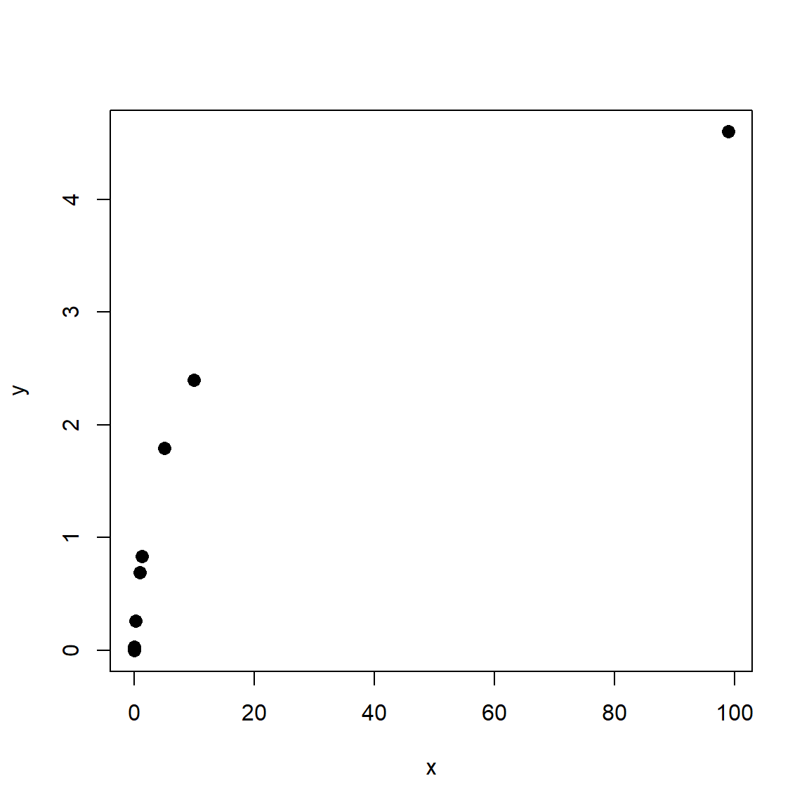
If the smallest nonzero value differs from 1 by more than an order of magnitude (i.e., \(\ge10\) or \(\le0.01\)), then a slightly different procedure is called for. The transformation below generalizes the \(\log{\left(x+1\right)}\) method so as to result in 0 for 0 values and somewhat preserve the original orders of magnitude (McCune et al. 2002).
\[y_i=\log{\left(x_i+d\right)}-c\]
In this equation:
\[\begin{matrix}c=&Trunc\left(\log{\left(min\left(x\right)\right)}\right)\\d=&e^c\\min\left(x\right)=&smallest\ nonzero\ x\\Trunc\left(x\right)=&function\ that\ truncates\ x\ to\ an\ integer\\\end{matrix}\]
This can be implemented in R using the following custom function:
mgtrans <- function(x){
minx <- min(x[x > 0])
cons <- trunc(log(minx))
y <- log(x + exp(cons)) - cons
return(y)
}
# example usage:
a <- c(0, rlnorm(9))
log(a) [1] -Inf 0.25331851 -0.02854676 -0.04287046 1.36860228 -0.22577099
[7] 1.51647060 -1.54875280 0.58461375 0.12385424mgtrans(a) [1] 0.000000 1.504510 1.292473 1.282103 2.458088 1.153391 2.594120 0.455949
[9] 1.771116 1.405285# count the points:
par(mfrow=c(1,2))
plot(a, log(a)) # missing one!
plot(a, mgtrans(a))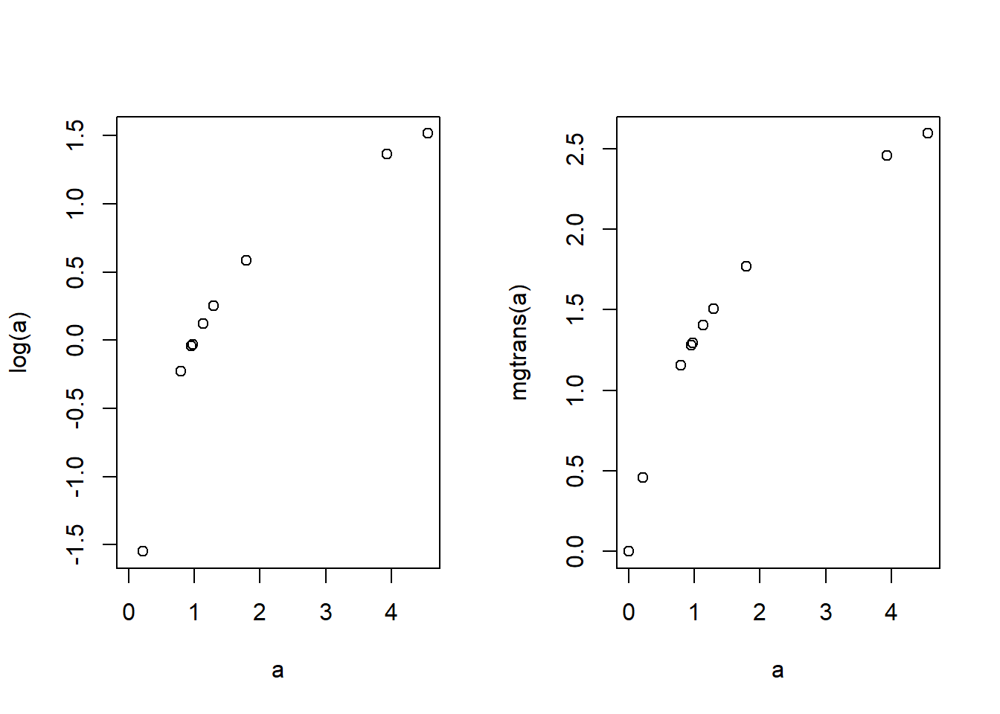
Note that if you use the McCune and Grace transform, you should keep the original values around for plotting because back-transforming can be tricky (if not impossible, if you don’t know d and c). If you are going to back-transform other values, such as model predictions, you will need to know d and c.
The example below shows how the McCune and Grace transform can be advantageous. First, we create 1000 random values from a lognormal distribution. Then, randomly set 100 of the values to 0. Log-transforming the data to achieve normality comes at the cost of losing 10% of the values because log(0) is undefined (left panel). The \(\log\left(x+1\right)\) transform retains all of the values, but distorts the shape of the distribution (middle panel) because many values are between 0 and 1. The McCune and Grace method (right panel) achieves normality (mostly) and retains all values.
set.seed(123)
n <- 1e3
x <- rlnorm(n, 0.5, 1)
x[sample(1:n, 100, replace=FALSE)] <- 0
t1 <- log(x)
t2 <- log(x+1)
t3 <- mgtrans(x)
length(which(is.finite(t1)))[1] 900par(mfrow=c(1,3), cex.main=1.2)
hist(t1, main=expression(Log~transform~(italic(n)==900)))
hist(t2, main=expression(Log~(italic(x)+1)~transform~(italic(n)==1000)))
hist(t3, main=expression(McCune-Grace~transform~(italic(n)==1000)))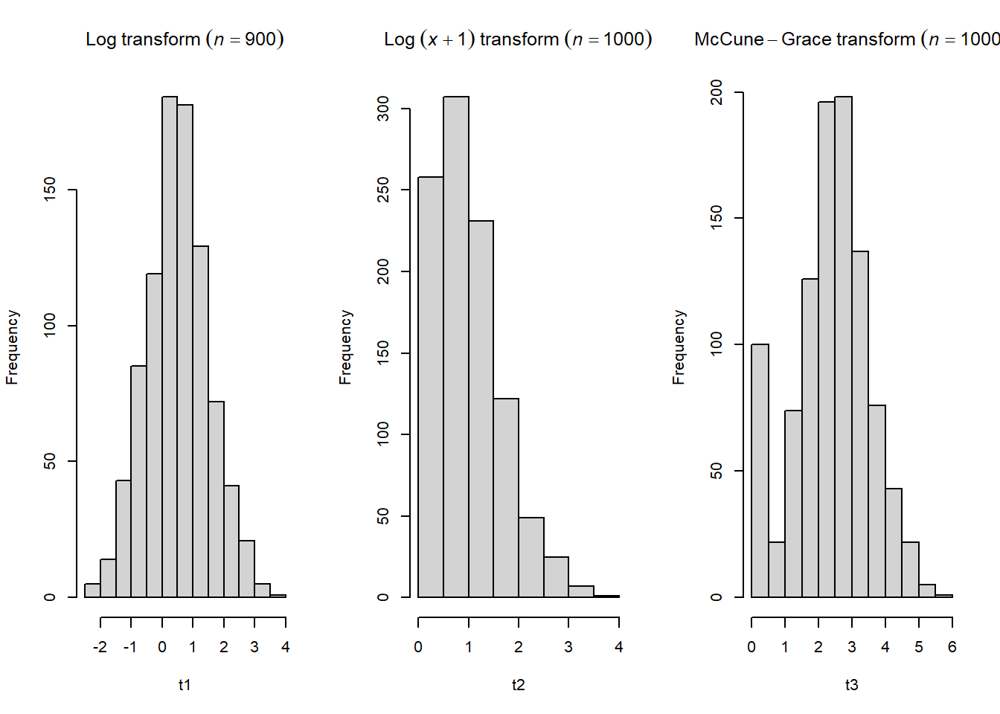
The spike in the right histogram comes from the fact that the McCune and Grace method maps values of 0 to 0.
9.5.3.3 Rank transformation
The rank transform replaces values with their ranks. The R function for this is rank(). Smaller values having smaller ranks and greater values having greater ranks. The smallest value has rank = 1, and the largest value has a rank equal to the number of values. That is, for any vector x rank(x)[x==min(x)] = 1 and rank(x)[x==max(x)] = length(x).
x <- rnorm(20, 5, 1)
y <- rank(x)
par(mfrow=c(1,1))
plot(x,y, xlab="Values", ylab="Rank(Values)")
Notice how the transformed variables y are evenly spaced while the original values are not. This can be useful if values are very “clumped” or “spread out”. Rank transforms are commonly used in nonparametric procedures. Note that the rank() function may return fractional or repeated ranks if there are ties:
# make some random values
x <- runif(10)
# force a tie
x[1] <- x[2]
# fractional ranks for ties:
rank(x) [1] 1.5 1.5 4.0 6.0 7.0 9.0 5.0 10.0 8.0 3.0# force a three-way tie:
x[3] <- x[2]
# repeated ranks:
rank(x) [1] 2 2 2 6 7 9 5 10 8 49.5.3.4 Logit and probit transformations
Logit transformation
The logit transformation and probit transformation are used to map proportions to the real number line. Often this changes proportions into something resembling a normal distribution. The logit is defined as the logarithm of the odds ratio. For any value x in the open interval7 (0, 1), the logit is calculated as:
\[logit\left(x\right)=\log{\left(\frac{x}{1-x}\right)}\]
The inverse of the logit function is the logistic function.
\[logistic\left(x\right)=\frac{e^x}{e^x+1}=\frac{1}{1+e^{-x}}\]
If x is a probability or proportion, then logit(x) is the logarithm of the odds ratio. For this reason, the logit is also called the “log-odds”. The logit function is also the inverse of the logistic function.
The figure below shows the relationship between the logit and logistic functions:
 {fig-alt: “Two plots illustrating inverse functions. The logit function increases from negative infinity as X approaches 0 to positive infinity as X approaches 1, crossing zero at X=0.5. The logistic function is an S-shaped curve increasing from 0 to 1 as X ranges from negative to positive infinity, crossing 0.5 at X=0.”}
{fig-alt: “Two plots illustrating inverse functions. The logit function increases from negative infinity as X approaches 0 to positive infinity as X approaches 1, crossing zero at X=0.5. The logistic function is an S-shaped curve increasing from 0 to 1 as X ranges from negative to positive infinity, crossing 0.5 at X=0.”}
The logit transformation has the effect of stretching out the ends of a distribution, while keeping the relationship between the original and transformed values roughly linear near the middle of the distribution. The logit transformation can be accomplished in R using the function qlogis(); its inverse, the logistic function, is plogis().
x <- 1:999/1000
y <- qlogis(x)
# compare:
par(mfrow=c(1,2))
hist(x)
hist(y)
Why is this useful? The logistic function takes any real input and outputs a value between 0 and 1. This means that the logit function takes values between 0 and 1 and outputs a real number. The example below shows how this can be applied to analyze proportions:
The first figure below shows how analyzing proportions with linear models leads to clearly inappropriate results. The predicted values of the model extend well outside the possible range of a probability.
set.seed(123)
n <- 50
x <- runif(n, 0, 10)
z <- -3 + 0.75*x + rnorm(n, 0, 1)
y <- plogis(z)
mod1 <- lm(y~x)
px <- seq(min(x), max(x), length=100)
pred <- predict(mod1, newdata=data.frame(x=px), se.fit=TRUE)
mn <- pred$fit
lo <- qnorm(0.025, mn, pred$se.fit)
up <- qnorm(0.975, mn, pred$se.fit)
par(mfrow=c(1,1))
plot(x, y, ylim=c(0, 1.3))
segments(0, 1, 10, 1, lty=2)
segments(0, 0, 10, 0, lty=2)
points(px, mn, type="l", lwd=2, col="red")
points(px, lo, type="l", lwd=2, lty=2, col="red")
points(px, up, type="l", lwd=2, lty=2, col="red")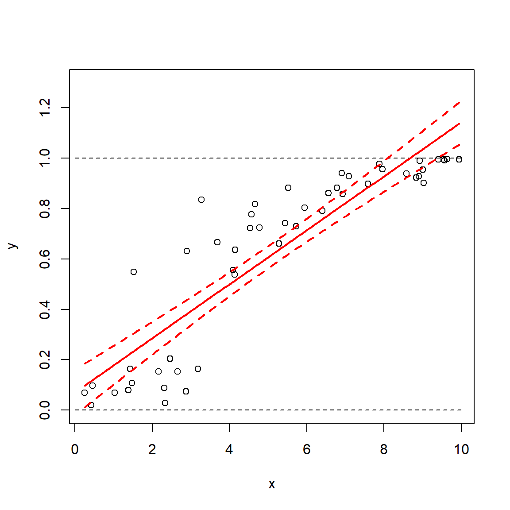
The linear model predicts probabilities (y) less than 0 and greater than 1, so clearly it is inappropriate for analyzing probabilities. However, applying a logit transform to the data for analysis (and later back-transforming using the logistic function) can allow you to analyze proportions. Another (and sometimes better way) to accomplish this is to use a GLM with binomial family and logit link.
y2 <- qlogis(y)
mod2 <- lm(y2~x)
pred2 <- predict(mod2, newdata=data.frame(x=px), se.fit=TRUE)
mn2 <- pred2$fit
lo2 <- qnorm(0.025, mn2, pred2$se.fit)
up2 <- qnorm(0.975, mn2, pred2$se.fit)
# backtransform
mn2 <- plogis(mn2)
lo2 <- plogis(lo2)
up2 <- plogis(up2)
par(mfrow=c(1,1))
plot(x, y, ylim=c(0, 1.3))
segments(0, 1, 10, 1, lty=2)
segments(0, 0, 10, 0, lty=2)
points(px, mn, type="l", lwd=2, col="red")
points(px, lo, type="l", lwd=2, lty=2, col="red")
points(px, up, type="l", lwd=2, lty=2, col="red")
points(px, mn2, type="l", lwd=2, col="blue")
points(px, lo2, type="l", lwd=2, lty=2, col="blue")
points(px, up2, type="l", lwd=2, lty=2, col="blue")
legend("bottomright",
legend=c("Linear", "Logit-transformed"),
lwd=2, col=c("red", "blue"), bg="white")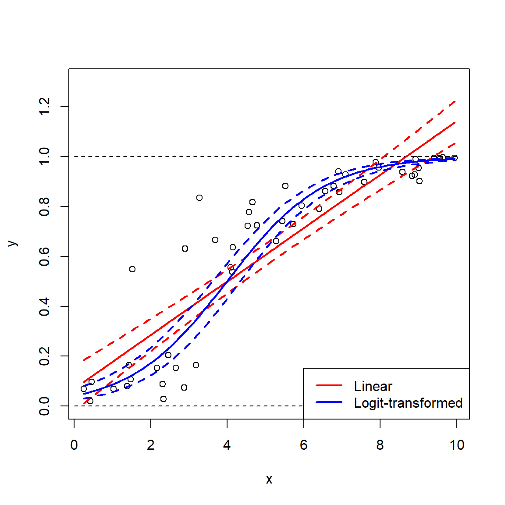
The downside of the logit transform is that it is undefined at at 0 and 1 (it approaches \(-\infty\) and \(+\infty\) as the inputs approach 0 and 1). One workaround is to add a small constant to avoid taking \(\log{\left(0\right)}\) or dividing by 0 (McCune et al. 2002; Warton and Hui 2011). The latter reference suggests adding the minimum non-zero value. You could also censor the values to be arbitrarily close to 0 or 1: for example, set all values \(<0.001\) to 0.001 and all values \(>0.999\) to 0.999. This practice is sometimes called “stabilizing the logit” (Kéry 2010).
# change some values in y to 1 and 0
y[which.max(y)] <- 1
y[which.min(y)] <- 0
# logit transformed values include infinities!
qlogis(y) [1] -2.5298619 3.7500756 0.2207000 2.4844936 5.3073196 -2.2318620
[7] 0.6657197 4.5882685 2.0138961 1.2461916 4.8648903 0.9539238
[13] 2.0198681 0.9887879 -2.6085359 3.0539803 -1.3622593 -Inf
[19] 1.6283614 5.3667394 2.5484363 1.7931407 1.3371457 5.2369884
[25] 1.8344244 2.5672970 1.0519484 1.4131947 0.5373003 -2.1224186
[31] Inf 2.2184900 2.7649033 3.0898599 -2.5994558 0.9631093
[37] 2.1861231 -1.7101479 -1.6322178 -2.3345978 -1.6254712 0.5573073
[43] 0.1559367 0.6886083 0.1934203 -2.4499857 -3.5614131 1.5004569
[49] -1.7144060 2.7456992# stabilize logit by setting max to 0.999 and min to 0.001
y <- pmin(0.999, y)
y <- pmax(0.001, y)
qlogis(y) [1] -2.5298619 3.7500756 0.2207000 2.4844936 5.3073196 -2.2318620
[7] 0.6657197 4.5882685 2.0138961 1.2461916 4.8648903 0.9539238
[13] 2.0198681 0.9887879 -2.6085359 3.0539803 -1.3622593 -6.9067548
[19] 1.6283614 5.3667394 2.5484363 1.7931407 1.3371457 5.2369884
[25] 1.8344244 2.5672970 1.0519484 1.4131947 0.5373003 -2.1224186
[31] 6.9067548 2.2184900 2.7649033 3.0898599 -2.5994558 0.9631093
[37] 2.1861231 -1.7101479 -1.6322178 -2.3345978 -1.6254712 0.5573073
[43] 0.1559367 0.6886083 0.1934203 -2.4499857 -3.5614131 1.5004569
[49] -1.7144060 2.7456992Probit transformation
Like the logit function, the probit function maps probabilities to the real number line. However, the probit function uses the CDF of the standard normal distribution instead of the logit function. The logit and the probit can be used in many of the same situations. Whereas the logit maps a probability using the log-odds, the probit maps a probability to the corresponding quantile of the standard normal distribution:
\[probit\left(x\right)=\Phi^{-1}\left(x\right)\] where \(\Phi\) is the CDF of the standard normal distribution (i.e., \(Normal\left(\mu=1,\sigma=1\right)\)). For example, a probability of 0.5 corresponds to a probit of 0, while probabilities of 0.025, and 0.975 correspond to probits of -1.96 and +1.96.
The R command for the probit function is qnorm(). As you might suspect from earlier in this chapter (Section 9.3.2.1), the inverse function is pnorm().
x <- 1:99/100
x.log <- qlogis(x)
x.prb <- qnorm(x)
plot(x, x.log, type="l",
lwd=3, xlab="x", ylab="f(x)")
points(x, x.prb, type="l", lwd=3,
col="red", lty=2)
abline(h=0, lty=3, col="blue")
abline(v=0.5, lty=3, col="blue")
legend("topleft",
legend=c("Logit(x)", "Probit(x)"),
lwd=3, col=c("black", "red"), lty=1:2)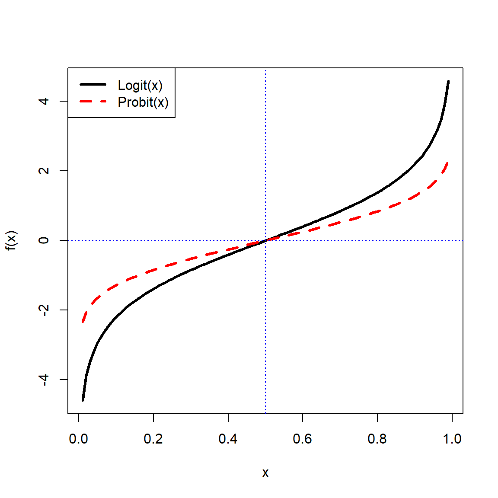
The figure above shows a logit and probit transform of probabilities from 0.01 to 0.99. The blue dashed lines show that both functions map \(p=0.05\) to 0. The logit and probit functions are similar near the center of the probability range but differ increasingly near 0 and 1. The logit approaches \(\pm\infty\) more rapidly because the corresponding logistic distribution has heavier tails than the normal distribution. Despite this difference, logit and probit GLMs usually produce very similar fitted probabilities except when probabilities are extreme.
In practice, logit and probit links or transforms usually produce very similar fitted probabilities, and the choice between them often has little effect on the biological conclusions. The logit is particularly convenient because its coefficients can be interpreted using odds ratios (see Section 19.1.1). The probit can be useful when there is a reason to imagine an underlying normally distributed continuous variable that produces a binary outcome when it crosses a threshold. For example, an organism might die when an unobserved physiological stress exceeds some threshold, or an animal might choose one habitat when an underlying preference exceeds a threshold. This latent-variable interpretation is one reason probit models are used in some fields.
Probit models have historically been especially common in toxicology and dose-response studies. If individuals differ in their tolerance to a toxin and those tolerances are approximately normally distributed, the proportion responding at a given dose can be modeled using the normal CDF. This approach was historically known as probit analysis and has been widely used to estimate quantities such as LD50.
9.5.4 Uncommon transformations
9.5.4.1 Square-root transformation
Square-root transforms map values to their square roots. This is sometimes used as a variance-stabilizing transformation, similar to the log transform. Square-root transforms are useful when a response variable is proportional to the square of the explanatory variable, or when the data show heteroscedasticity (non-constant variance). Counts are sometimes analyzed using a square-root transform. The square-root transform is a special case of the power transform (where values are raised to a power) and a special case of the Box-Cox transform (see Section 9.5.4.3). The square-root function in R is sqrt(). There are several ways to accomplish a square-root transform in R:
x <- rnorm(20, 5, 1)
y <- sqrt(x)
z <- x^0.5Higher roots (cube root, fourth root, etc.) are sometimes used as transforms, but this is not very common.
w <- x^(1/3) # cube rootHere is an example of using the square root transform on right-skewed data:
set.seed(123)
x <- rlnorm(100, 2, 1)
par(mfrow=c(1,3), cex.lab=1.4)
hist(x, main="Original values")
hist(sqrt(x), main="Square root transform", xlab=expression(sqrt(x)))
hist(x^(1/3), main="Cube root transform", xlab=expression(root(x,3)))
Notice how the square- and cube-root transformed data appear much more normally-distributed than the original data.
# reset plot layout
par(mfrow=c(1,1))9.5.4.2 Arcsine square root transformation
Another transformation historically used for proportional data is to use the arcsine square root transform, or arcsine transform for short:
\[y_i=\frac{2}{\pi}arcsin\left(\sqrt{x_i}\right)\]
Some sources omit the coefficient \(2/\pi\); others do not. Including the \(2/\pi\) rescales the function so that the transformed values range from 0 to 1 (McCune et al. 2002). Without this factor, the function maps probabilities to \(\left[0,\pi/2\right]\) instead of \(\left[0,1\right]\).
For a binomial proportion, variance depends on the underlying probability \(p\), with proportions near 0 or 1 having different variance than those near 0.5. The arcsine transform was used as a variance-stabilizing transformation to reduce the dependence of the variance on the mean.
Although historically common in biology, the arcsine square-root transform is generally not recommended when proportions arise from an identifiable binomial process. A binomial GLM (Section 19.2) models the mean-variance relationship directly while respecting the bounded nature of the response, and is usually preferable to transforming the proportions. The transformation has also been criticized for ecological proportional data more generally (Warton and Hui 2011). Thus, its main importance today may be in understanding older literature rather than as a default method for analyzing new data.
If you insist on using the arcsine transform, you can do it in R using asin() function. In the examples below, asin() is embedded inside custom functions that perform the other parts of the arcsine transform.
# unscaled version:
asin.trans1 <- function(p) {asin(sqrt(p))}
# scaled version:
asin.trans2 <- function(p) {2/pi*asin(sqrt(p))}
# example of use
x <- seq(0.001, 0.999, by=0.001)
y1 <- asin.trans1(x)
y2 <- asin.trans2(x)
# compare with and without 2/pi coefficient:
plot(x,y1, ylim=c(0, 1.6), type="l", lwd=3)
points(x, y2, col="red", type="l", lwd=3, lty=2)
legend("topleft",
legend=c("Unscaled version", "Scaled version"),
lwd=3, lty=1:2, col=c("black", "red"),
cex=1.4)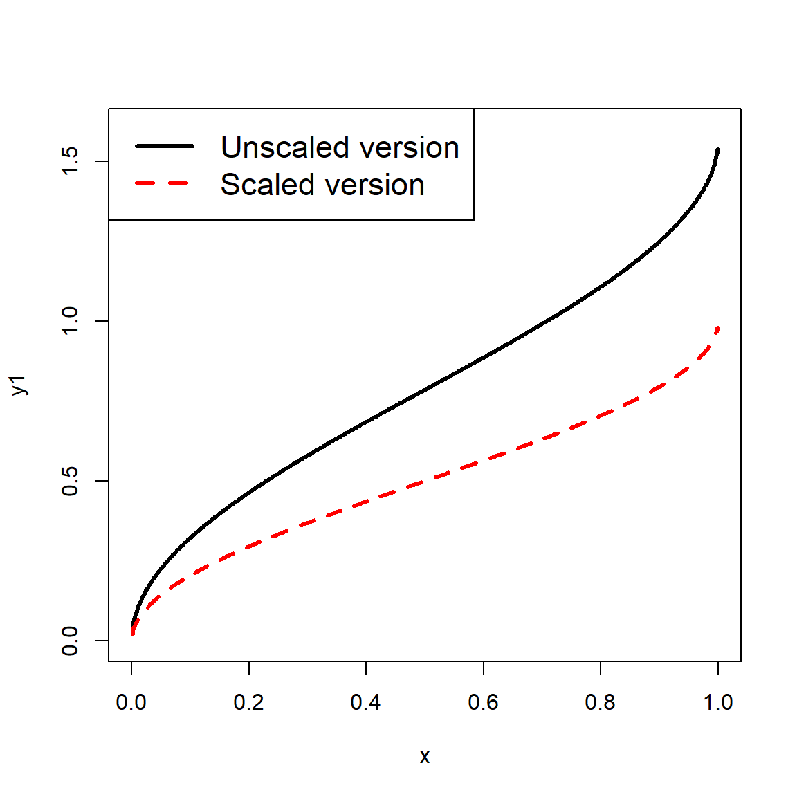
The plot below compares the arcsine to the logit transformation for proportional data.
# compare to logit transform:
y3 <- qlogis(x)
plot(x,y1, ylim=c(-5, 5), xlim=c(0,1), type="l")
points(x, y2, col="red", type="l", lwd=3, lty=2)
points(x, y3, col="blue", type="l", lwd=3, lty=3)
legend("topleft",
legend=c("Unscaled arcsine",
"Scaled arcsine",
"Logit"),
lty=1:3, lwd=3, col=c("black", "red", "blue"), cex=1.4)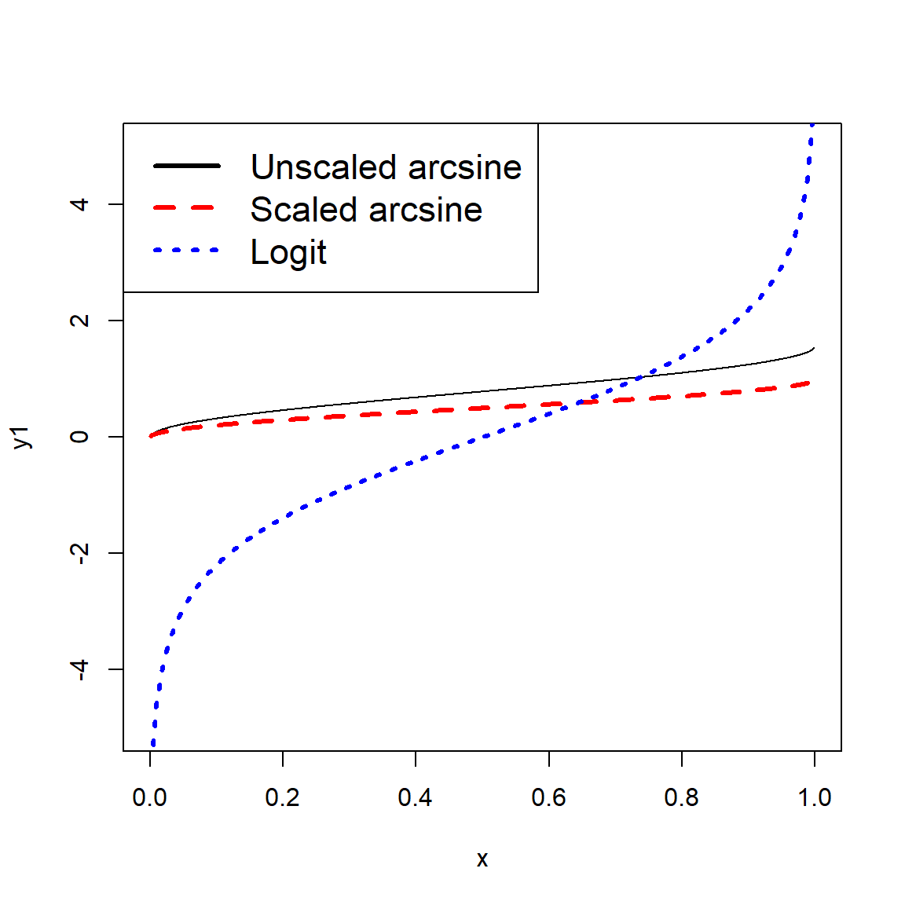
Unlike the logit, the arcsine transform remains bounded at \(p=0\) and \(p=1\). Consequently, it can transform observed proportions of exactly 0 or 1 without adjustment, whereas logit is undefined at those values.
9.5.4.3 Box-Cox transformation
The Box-Cox transformation is a family of power transformations used to identify a useful transformation of a positive response variable in a statistical model (Box and Cox 1964). Rather than choosing a transformation such as square root or logarithm by hand, the Box-Cox procedure estimates a parameter \(\lambda\) that determines the transformation.
\[ y_i^{(\lambda)}= \begin{cases} \log(y_i), & \lambda=0 \\[4pt] \dfrac{y_i^\lambda-1}{\lambda}, & \lambda\ne0 \end{cases} \]
Thus, Box-Cox includes many familiar transformations as special cases. A value of \(\lambda=1\) corresponds essentially to no transformation, \(\lambda=0.5\) to a square-root transformation, \(\lambda=0\) to a logarithmic transformation, and \(\lambda=-1\) to a reciprocal transformation.
| \(\lambda\) | Approximate transformation |
|---|---|
| \(2\) | \(y^2\) |
| \(1\) | \(y\) (no transformation) |
| \(0.5\) | \(\sqrt{y}\) |
| \(0\) | \(\log(y)\) |
| \(-0.5\) | \(1/\sqrt{y}\) |
| \(-1\) | \(1/y\) |
Here the parameter \(\lambda\) is some constant that must be optimized for a given variable. When \(\lambda=0\), the transformation is defined as \(y_i=\log{\left(x_i\right)}\).
Unlike the transformations considered above, Box-Cox is usually applied in the context of a statistical model. A model is fitted repeatedly using different values of \(\lambda\), and the likelihood is calculated for each. The value of \(\lambda\) that maximizes the likelihood is the estimated optimal transformation.
The Box-Cox transformation is available in several packages, but not base R. Here is an example using the functions in package MASS:
set.seed(123)
n <- 100
x <- runif(n, 0, 5)
# relationship is linear with normal errors on log scale
logy <- 1 + 0.4*x + rnorm(n, 0, 0.3)
y <- exp(logy)
# but on linear scale, relationship appears nonlinear
plot(x, y, pch=16)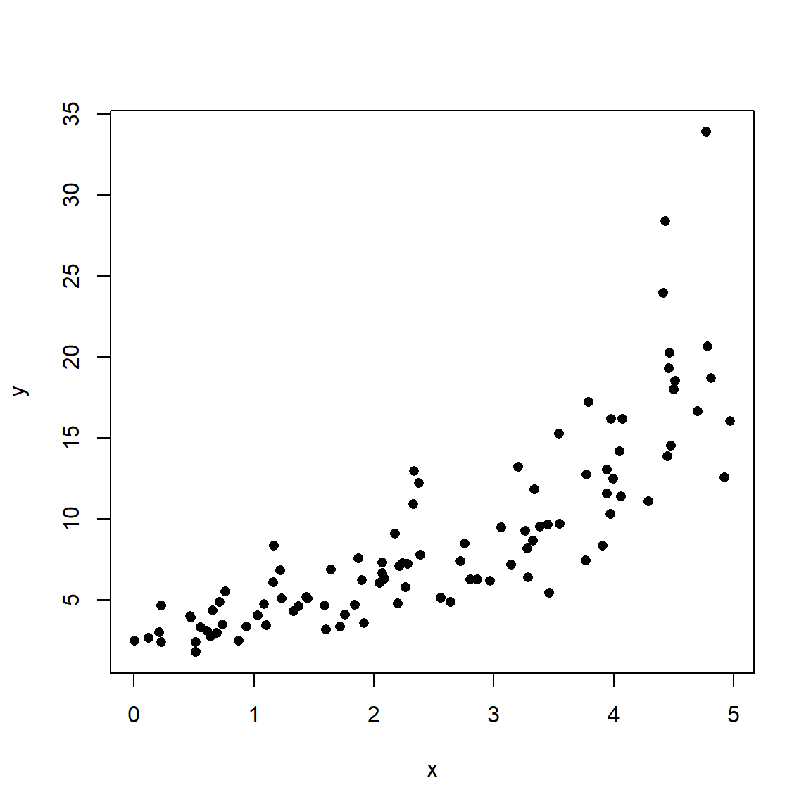
# fit a linear model
m1 <- lm(y ~ x)
# some model diagnostics
par(mfrow=c(1,2))
plot(m1, which=1)
plot(m1, which=2)
Notice how the diagnostic plots show some patterns in the residuals, violating the assumptions of the linear regression model. A Box-Cox transformation might help here.
library(MASS)
bc <- boxcox(m1)
The Box-Cox function estimated an optimal \(\lambda\) near 0, which corresponds to the log transformation that actually generated the data (see Table 9.1).
Then, we extract the optimal \(\lambda\):
use.lambda <- bc$x[which.max(bc$y)]
use.lambda[1] -0.06060606You don’t need to use the estimated value blindly. In this case, it is close to 0, suggesting a log transform ().
# refit the model with the log transform
m2 <- lm(log(y) ~ x)
# compare diagnostic plots
par(mfrow=c(2,2), mar=c(5.1, 5.1, 2.1, 1.1))
plot(m1, which=1)
plot(m1, which=2)
plot(m2, which=1)
plot(m2, which=2)
The Box-Cox transformation requires positive response values. In practice, its estimated value of \(\lambda\) is often most useful as a guide to choosing a simple, interpretable transformation rather than as a requirement to use the exact estimated value. As with any transformation, its success should ultimately be evaluated by examining the fitted model and its diagnostic plots.
The Box-Cox procedure was developed when transforming data to satisfy the assumptions of linear models was a common solution to non-normality, nonlinearity, and non-constant variance. It remains useful for identifying appropriate power transformations, but many problems that once motivated Box-Cox transformations can now be addressed more directly using generalized linear models or other models that explicitly represent the distribution and mean-variance relationship of the response.
9.5.5 Transformations closing thoughts
A transformation should not be chosen simply because it makes a scatterplot look more linear or a histogram look more normal. Before transforming a variable, consider why the observed pattern has its shape. A curved relationship may arise because the variables are related on a multiplicative scale, in which case a transformation may be useful. It may instead reflect the mean-variance relationship or support of a particular probability distribution, which may be better handled using a GLM. Alternatively, the curvature may reflect a genuinely nonlinear biological process, in which case a nonlinear model may provide a more meaningful description. The goal is not to make the data fit the model; it is to choose a model and scale that appropriately represent the data and the biological process that generated them.
Box GEP, Cox DR. 1964. An analysis of transformations. Journal of the Royal Statistical Society: Series B (Methodological) 26(2):211–243. https://doi.org/10.1111/j.2517-6161.1964.tb00553.x
Kéry M. 2010. Introduction to WinBUGS for ecologists: Bayesian approach to regression, ANOVA, mixed models and related analyses. Academic Press.
McCune B, Grace JB, Urban DL. 2002. Analysis of ecological communities. MjM software design, Gleneden Beach, Oregon, USA.
Warton DI, Hui FKC. 2011. The arcsine is asinine: The analysis of proportions in ecology. Ecology 92(1):3–10. https://doi.org/10.1890/10-0340.1
Wolodzko T. 2026. extraDistr: Additional univariate and multivariate distributions.
Although the values must be rounded to non-negative integers!↩︎
The area under the PDF must be 1, so the height of the PDF of a uniform distribution must be 1 divided by its width.↩︎
If the growth factors \(G_n\) are constant, then \(S_t=S_0G^t\), or more generally an exponential function \(f\left(t\right)=ae^{bt}\). Attempting to calculate the derivative of this function leads to preferring Euler’s constant \(e\) as the base because the function \(e^t\) is it’s own derivative. Here is a youtube video that explains this visually.↩︎
And whatever you do, don’t call the natural logarithm “lawn”.↩︎
This video illustrates the usefulness of logarithms in statistics and has a nice theme song.↩︎
Remember that exponential functions relate addition and multiplication. This is how exponentiation is extended to non-integer powers: \(X^aX^b=X^{a+b}\). And, in some sense the definition of exponentiation.↩︎
An open interval is an interval \(\left(a,b\right)\) that contains values \(>a\) and \(<b\), but never \(a\) or \(b\). Open intervals are denoted by parentheses (). Intervals that contain their limits are called closed intervals, denoted with brackets []: \(\left[a,b\right]\).↩︎